Code
knitr::opts_chunk$set(message = FALSE, warning = FALSE)A clear plan for a data analysis and visualization project must optimize resource allocation. The typical steps to carry out these projects in R are as follows: data import, data manipulation, descriptive statistics, inferential statistics and data visualization.
knitr::opts_chunk$set(message = FALSE, warning = FALSE)# Packages
pacman::p_load(
rio,
here,
reportfactory,
rfextras,
tidyverse,
ggcorrplot,
ggsci,
ggpubr,
ggthemes,
ggpomological,
extrafont,
showtext,
finalfit,
gtsummary,
flextable,
ftExtra,
broom,
performance,
lmtest,
stats,
moments,
nortest,
car,
Rtsne,
factoextra,
corrplot,
grateful,
patchwork,
officer
)
# For PostScript output
extrafont::loadfonts(device = "postscript")
# My function scripts
rfextras::load_scripts()grateful::cite_packages(
output = "file",
out.format = "docx",
out.dir = ".",
citation.style = "vancouver")clean_data <- import(here("data", "clean_data.tsv"))The custom themes for gtsummary, flextable and ggplot2, are in the custom themes.R script. The only theme that needs to be set is the gtsummary theme.
# Set a gtsummary theme
gtsummary::theme_gtsummary_compact()
gtsummary::theme_gtsummary_journal(journal = "jama")
# Set a gtsummary language
theme_gtsummary_language(language = "en")This subsection converts categorical variables into factors and recode/clean values using a data dictionary. The categorical variables will be saved as factor vectors, while some continuous/numeric variables will be categorized and converted into factors. Then, recode and change the factor levels using the forcats package. Also, the finalfit package will be utilized to label variables, while the ftExtra package will detect special characters and format the character columns as markdown text to be added to the flextable object. An alternate option is to utilize the matchmaker package for dictionary-based cleanup or labelled package to manipulate metadata. The disadvantage of categorizing continuous variables is that information is discarded. To address this, repeat the analysis on continuous variables to ensure there are no differences in the conclusion (sensitivity analysis).
📝NOTE: The markdown texts is by design a plain text
Possible risk factors associated with mortality caused by COVID-19 in patients with type II diabetes mellitus (T2DM), each factor is labeled with a legend that indicates its clinical importance, accuracy, and number of events.
##########data <- clean_data |>
mutate(
edad = ff_label(edad, "Age (years)"), ###
edad.c =
case_when(
edad <= 60 ~ "< 61",
edad > 60 ~ ">= 61") |>
fct_relevel("< 61", ">= 61") |>
ff_label("Age (years)"),
sexo = factor(sexo) |> ###
fct_relevel("Female", "Male") |>
ff_label("Sex"),
t_de_enfermedad = ff_label(t_de_enfermedad, "Duration of disease (days)"), ##
tabaquismo = factor(tabaquismo) |> ####
fct_relevel("No", "Yes") |>
ff_label("Smoking"),
alcoholismo = factor(alcoholismo) |> ####
fct_relevel("No", "Yes") |>
ff_label("Alcoholism"),
obesidad = factor(obesidad) |> ###
fct_relevel("No", "Yes") |>
ff_label("Obesity"),
asma_bronquial = factor(asma_bronquial) |> ####
fct_relevel("No", "Yes") |>
ff_label("Asthma"),
hta = factor(hta) |> ###
fct_relevel("No", "Yes") |>
ff_label("Hypertension"),
dislipidemia = factor(dislipidemia) |> ##
fct_relevel("No", "Yes") |>
ff_label("Dyslipidemia"),
ecv = factor(ecv) |> ####
fct_relevel("No", "Yes") |>
ff_label("Cerebrovascular disease"),
neoplasia = factor(neoplasia) |> ####
fct_relevel("No", "Yes") |>
ff_label("Cancer"),
vih = factor(vih) |> ####
fct_relevel("No", "Yes") |>
ff_label("HIV"),
e_inmunosupresora =
case_when(
neoplasia == "Yes" | vih == "Yes" | e_inmunosupresora == "Yes" ~ "Yes",
TRUE ~ "No") |> ####
fct_relevel("No", "Yes") |>
ff_label("Immunesupressive disease"),
erc = factor(erc) |> ####
fct_recode("No" = "ON",) |>
fct_relevel("No", "Yes") |>
ff_label("Chronic renal disease"),
f_renal_aguda = factor(f_renal_aguda) |> #
fct_relevel("No", "Yes") |>
ff_label("Acute kidney injury"),
fiebre = factor(fiebre) |> ###
fct_relevel("No", "Yes") |>
ff_label("Fever"),
tos = factor(tos) |> ###
fct_relevel("No", "Yes") |>
ff_label("Dry cought"),
dolor_de_garganta = factor(dolor_de_garganta) |> #
fct_relevel("No", "Yes") |>
ff_label("Sore throat"),
malestar_general = factor(malestar_general) |> #
fct_relevel("No", "Yes") |>
ff_label("General malaise"),
cefalea = factor(cefalea) |> #
fct_relevel("No", "Yes") |>
ff_label("Headache"),
astenia = factor(astenia) |> ###
fct_relevel("No", "Yes") |>
ff_label("Asthenia"),
anosmia = factor(anosmia) |> ###
fct_relevel("No", "Yes") |>
ff_label("Anosmia"),
disgeusia = factor(disgeusia) |> ###
fct_relevel("No", "Yes") |>
ff_label("Dysgeusia"),
disnea = factor(disnea) |> ###
fct_relevel("No", "Yes") |>
ff_label("Dyspnea"),
perdida_de_peso = factor(perdida_de_peso) |> ####
fct_relevel("No", "Yes") |>
ff_label("Weight loss"),
estertores_pulmonares = factor(estertores_pulmonares) |> ###
fct_relevel("No", "Yes") |>
ff_label("Lung crackles"),
diarrrea = factor(diarrrea) |> ###
fct_relevel("No", "Yes") |>
ff_label("Diarrhea"),
emesis = factor(emesis) |> ###
fct_relevel("No", "Yes") |>
ff_label("Vomiting"),
dolor_abdominal = factor(dolor_abdominal) |> ####
fct_relevel("No", "Yes") |>
ff_label("Abdominal pain"),
poliuria = factor(poliuria) |> ####
fct_relevel("Yes", "No") |>
ff_label("Polyuria"),
polidipsia = factor(polidipsia) |> ####
fct_relevel("Yes", "No") |>
ff_label("Polidipsia"),
polifagia = factor(polifagia) |> ####
fct_relevel("Yes", "No") |>
ff_label("Poliphagia"),
disgeusia = factor(disgeusia) |> ####
fct_relevel("Yes", "No") |>
ff_label("Dysgeusia"),
taquipnea = factor(taquipnea) |> ###
fct_relevel("No", "Yes") |>
ff_label("Tachypnea"),
sensorio = factor(sensorio) |> #
fct_recode(
"Awake" = "DESPIERTO",
"Sleepy" = "SOMNOLIENTO",
"Drowsy" = "SOPOROSO") |>
fct_relevel("Awake", "Sleepy", "Drowsy") |>
ff_label("Sensory"),
ingreso_a_uci = factor(ingreso_a_uci) |> ####
fct_relevel("No", "Yes") |>
ff_label("ICU admission"),
corticoides = case_when(corticoides == "No" ~ "No",
TRUE ~ "Yes") |> ###
fct_relevel("No", "Yes") |>
ff_label("Corticosteroids"),
anticoagulantes = factor(anticoagulantes) |> ###
fct_recode("Enoxaparin" = "ENOXAPARINA") |>
fct_relevel("No", "Enoxaparin") |>
ff_label("Anticoagulants"),
antiparasitarios = factor(antiparasitarios) |> ###
fct_recode("Ivermectin" = "IVERMECTINA") |>
fct_relevel("No", "Ivermectin") |>
ff_label("Antiparasitics"),
antipaludicos = factor(antipaludicos) |> ###
fct_recode("Hydroxychloroquine" = "HIDROXICLOROQUINA") |>
fct_relevel("No", "Hydroxychloroquine") |>
ff_label("Antimalarials"),
antibioticos = case_when(antibioticos == "No" ~ "No",
TRUE ~ "Yes") |> ###
fct_relevel("No", "Yes") |>
ff_label("Antibiotics"),
pronacion = factor(pronacion) |> ###
fct_relevel("Yes", "No") |>
ff_label("Pronation"),
hemodialisis = factor(hemodialisis) |> #
fct_relevel("No", "Yes") |>
ff_label("Hemodialysis"),
sepsis = factor(sepsis) |> #
fct_relevel("No", "Yes") |>
ff_label("Sepsis"),
shock_septico = factor(shock_septico) |> #
fct_relevel("No", "Yes") |>
ff_label("Septic shock"),
p_a_sistolica = ff_label(p_a_sistolica, "SBP (mmHg)"), ###
p_a_sistolica.c =
case_when(
p_a_sistolica < 140 ~ "< 140",
TRUE ~ ">= 140") |>
fct_relevel("< 140", ">= 140") |>
ff_label("SBP (mmHg)"),
p_a_diastolica = ff_label(p_a_diastolica, "DBP (mmHg)"), ###
p_a_diastolica.c =
case_when(
p_a_diastolica < 90 ~ "< 90",
TRUE ~ ">= 90") |>
fct_relevel("< 90", ">= 90") |>
ff_label("DBP (mmHg)"),
hemoglobina = ff_label(hemoglobina, "Hemoglobin (g/dL)"), ###
hemoglobina.c =
case_when(
hemoglobina <= 12 ~ "<= 12",
TRUE ~ "> 12") |>
fct_relevel("> 12", "<= 12") |>
ff_label("Hemoglobin (g/dL)"),
hematocrito = ff_label(hematocrito, "Hematocrit (%)"), ##
hematocrito.c =
case_when(
hematocrito < 36 ~ "< 36",
TRUE ~ ">= 36") |>
fct_relevel(">= 36", "< 36") |>
ff_label("Hematocrit (%)"),
MCV = ff_label(MCV, "MCV (mm^3^)"), ##
MCH = ff_label(MCH, "MCH (pg)"), ##
leucocitos = leucocitos / 1000,
leucocitos = ff_label(leucocitos, "White-cells (×10^9^/L)"), ###
leucocitos.c =
case_when(
leucocitos < 4 ~ "< 4",
leucocitos >= 4 & leucocitos <= 10 ~ "4-10",
leucocitos > 10 ~ "> 10") |>
fct_relevel("4-10", "< 4", "> 10") |>
ff_label("White-cells (×10^9^/L)"),
linfocitos = linfocitos / 1000,
linfocitos = ff_label(linfocitos, "Lymphocytes (×10^9^/L)"), ###
linfocitos.c =
case_when(
linfocitos < 1 ~ "< 1",
TRUE ~ ">= 1") |>
fct_relevel(">= 1", "< 1") |>
ff_label("Lymphocytes (×10^9^/L)"),
neutrofilos = neutrofilos / 1000,
neutrofilos = ff_label(neutrofilos, "Neutrophils (×10^9^/L)"), ###
neutrofilos.c =
case_when(
neutrofilos > 6.3 ~ "> 6.3",
TRUE ~ "<= 6.3") |>
fct_relevel("<= 6.3", "> 6.3") |>
ff_label("Neutrophils (×10^9^/L)"),
plaquetas = plaquetas / 1000,
plaquetas = ff_label(plaquetas, "Platelets (×10^9^/L)"), ###
plaquetas.c =
case_when(
plaquetas < 125 ~ "< 125",
TRUE ~ ">= 125") |>
fct_relevel(">= 125", "< 125") |>
ff_label("Platelets (×10^9^/L)"),
glucosa = ff_label(glucosa, "Glucose (mg/dL)"), ###
urea = ff_label(urea, "BUN (mg/dL)"), ###
urea.c =
case_when(
urea < 20 ~ "< 20",
TRUE ~ ">= 20") |>
fct_relevel("< 20", ">= 20") |>
ff_label("BUN (mg/dL)"),
creatinina = ff_label(creatinina, "Serum creatinine (mg/dL)"), ###
creatinina.c =
case_when(
creatinina < 1.3 ~ "< 1.3",
TRUE ~ ">= 1.3") |>
fct_relevel("< 1.3", ">= 1.3") |>
ff_label("Serum creatinine (mg/dL)"),
ph = ff_label(ph, "pH"), ##
ph.c =
case_when(
ph < 7.35 ~ "< 7.35",
ph >= 7.35 & ph <= 7.45 ~ "7.35 - 7.45",
ph > 7.45 ~ "> 7.45") |>
fct_relevel("7.35 - 7.45", "< 7.35", "> 7.45") |>
ff_label("pH"),
frec_cardiaca = ff_label(frec_cardiaca, "Heart rate (BPM)"), ##
frec_cardiaca.c =
case_when(
frec_cardiaca < 100 ~ "< 100",
TRUE ~ ">= 100") |>
fct_relevel("< 100", ">= 100") |>
ff_label("Heart rate (BPM)"),
frec_respiratoria = ff_label(frec_respiratoria, "Respiratory rate (BPM)"), ##
frec_respiratoria.c =
case_when(
frec_respiratoria < 24 ~ "< 24",
frec_respiratoria >= 24 & frec_respiratoria <= 30 ~ "24 - 30",
frec_respiratoria > 30 ~ "> 30") |> ##
fct_relevel("24 - 30", "< 24", "> 30") |>
ff_label("Respiratory rate (BPM)"),
SaO2 = ff_label(SaO2, "SaO~2~ (%)"), ###
SaO2.c =
case_when(
SaO2 < 94 ~ "< 94",
TRUE ~ ">= 94") |>
fct_relevel(">= 94", "< 94") |>
ff_label("SaO~2~"),
FiO2_aga = ff_label(FiO2_aga, "FiO~2~ (%)"), ###
FiO2_aga.c =
case_when(
FiO2_aga > 21 ~ "> 21 (O~2~ therapy)",
TRUE ~ "21") |>
fct_relevel("> 21 (O~2~ therapy)", "21") |>
ff_label("FiO~2~ (%)"),
PaO2 = ff_label(PaO2, "PaO~2~ (mmHg)"), ##
PaO2.c =
case_when(
PaO2 < 60 ~ "< 60",
TRUE ~ ">= 60") |>
fct_relevel(">= 60", "< 60") |>
ff_label("PaO~2~"),
PCO2 = ff_label(PCO2, "PCO~2~ (mmHg)"), ##
PCO2.c =
case_when(
PCO2 < 36 ~ "< 36",
TRUE ~ ">= 36") |>
fct_relevel("< 36", ">= 36") |>
ff_label("PCO~2~ (mmHg)"),
PaO2_FiO2 = ff_label(PaO2_FiO2, "PaO~2~:FiO~2~ ratio"), ###
PaO2_FiO2.c =
case_when(
PaO2_FiO2 <= 200 ~ "<= 200",
TRUE ~ "> 200") |>
fct_relevel("> 200", "<= 200") |>
ff_label("PaO~2~:FiO~2~ ratio"),
HCO3 = ff_label(HCO3, "HCO~3~ (mmol/L)"), ##
HCO3.c =
case_when(
HCO3 < 21 ~ "< 21",
HCO3 >= 21 & HCO3 <= 28 ~ "21 - 28",
HCO3 > 28 ~ "> 28") |>
fct_relevel("21 - 28", "< 21", "> 28") |>
ff_label("HCO~3~ (mEq/L)"),
anion_gap = ff_label(anion_gap, "Anion Gap (mEq/L)"), ##
anion_gap.c =
case_when(
anion_gap < 7 ~ "< 7",
anion_gap >= 7 & anion_gap <= 13 ~ "7 - 13",
anion_gap > 13 ~ "> 13") |>
fct_relevel("7 - 13", "< 7", "> 13") |>
ff_label("Anion Gap (mEq/L)"),
sodio = ff_label(sodio, "Sodium (mmol/L)"), ##
potasio = ff_label(potasio, "Potasium (mEq/L)"), ##
calcio = ff_label(calcio, "Calcium (mmol/L)"), ##
cloro = ff_label(calcio, "Chlorine (mmol/L)") ##
)data <- data |>
mutate(
a_f = factor(a_f) |>
fct_recode(
"Non-survivor" = "FALLECIDO",
"Survivor" = "ALTA") |>
fct_relevel("Survivor", "Non-survivor")
)data <- data |>
select(
# Demographic characteristics and clinical history
edad,
edad.c,
sexo,
tabaquismo,
alcoholismo,
dislipidemia,
obesidad,
hta,
ecv,
neoplasia,
vih,
e_inmunosupresora,
erc,
hemodialisis,
asma_bronquial,
t_de_enfermedad,
# Signs and symptoms
fiebre,
tos,
dolor_de_garganta,
malestar_general,
cefalea,
taquipnea,
disnea,
anosmia,
disgeusia,
estertores_pulmonares,
diarrrea,
emesis,
astenia,
dolor_abdominal,
perdida_de_peso,
poliuria,
polidipsia,
polifagia,
sensorio,
# Vital signs
frec_respiratoria,
frec_respiratoria.c,
frec_cardiaca,
frec_cardiaca.c,
p_a_sistolica,
p_a_sistolica.c,
p_a_diastolica,
p_a_diastolica.c,
# Laboratory findings
leucocitos,
leucocitos.c,
neutrofilos,
neutrofilos.c,
linfocitos,
linfocitos.c,
plaquetas,
plaquetas.c,
MCV,
MCH,
hemoglobina,
hemoglobina.c,
hematocrito,
hematocrito.c,
creatinina,
creatinina.c,
urea,
urea.c,
glucosa,
ph,
ph.c,
anion_gap,
anion_gap.c,
sodio,
potasio,
cloro,
calcio,
# Blood gas findings
SaO2,
SaO2.c,
FiO2_aga,
FiO2_aga.c,
PaO2_FiO2,
PaO2_FiO2.c,
PaO2,
PaO2.c,
PCO2,
PCO2.c,
HCO3,
HCO3.c,
# Treatment
antibioticos,
corticoides,
anticoagulantes,
antiparasitarios,
antipaludicos,
pronacion,
# outcomes
a_f
)In this subsection we will see a preview of the descriptive statistics, some summary measures from our sample. How you visualize the distribution of a variable will depend on whether the variable is categorical or continuous. To analyze the distribution of a continuous variable, begin with a histogram or density plot for a visual representation of the data distribution. For categorical variables, a bar chart or a pie/donut chart provides a clear comparison of different categories. In cases where a categorical variable has few levels, consider using tables or box plots for a more concise display of the data.
📝NOTE: Descriptive statistics help you describe your current data, while inferential statistics allow you to make predictions and informed decisions based on your data.
A categorical variable is a variable that can take on one of a small set of values. These values can be character, logical, or factor values. According to the object classes, character class objects are the most flexible, while logic class objects are the most restrictive. Many categorical variables lack an intrinsic order, and thus, it is necessary to reorder them to create a more informative display.
# Selection of factors
categorical <- data |>
dplyr::select(where(is.factor))
# Multiple tables
lapply(categorical, function(x)
table(x, categorical$a_f))The distribution of continuous/numeric variables can be visualized using histograms, frequency polygons, Q-Q plots, box plots, violin plots, jitter plots, and Sina plots. A variable is considered continuous if it can assume any value from an infinite set of ordered values within an interval. A histogram shows the distribution of a continuous variable and differs from a bar chart by grouping data into continuous intervals. It also examines the distribution of a continuous variable broken down by a categorical variable (categorical outcome). A density plot displays the density instead of the count, which is the standardized count so that the area under each frequency polygon is 1 or 100%. In addition to the histogram and the frequency polygon, the probability distribution of a continuous variable can be obtained from the density function. This function is defined in terms of probability and would construct a frequency polygon if we had an infinite set of data, resulting in a continuous curve.
# Selection of numerical variables
numerical <- data |>
dplyr::select(where(is.numeric))
# Summary statistics
lapply(numerical, function(x)
summary(x))# Variable groups
dem_numerical <- numerical |>
dplyr::select(edad:p_a_diastolica, glucosa, -t_de_enfermedad)
hemo_numerical <- numerical |>
dplyr::select(leucocitos:MCH)
biochem_numerical <- numerical |>
dplyr::select(hemoglobina:urea, PaO2_FiO2, FiO2_aga, SaO2, -creatinina)
electro_numerical <- numerical |>
dplyr::select(sodio:calcio, PaO2, PCO2)# Formal and visual exploration
total_plots(dem_numerical)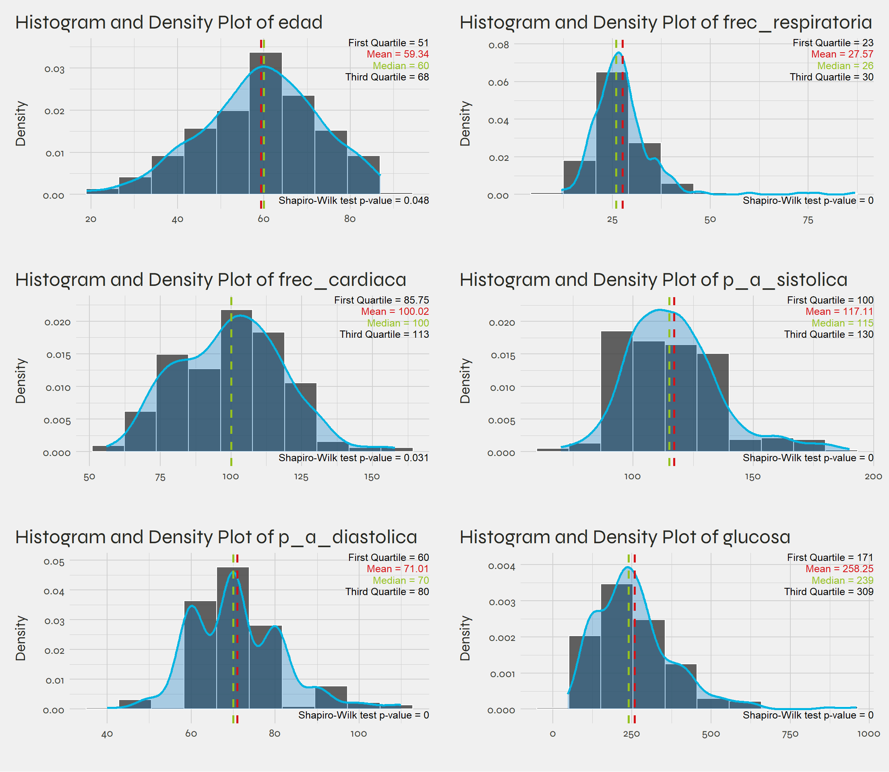
# Formal and visual exploration
total_plots(hemo_numerical)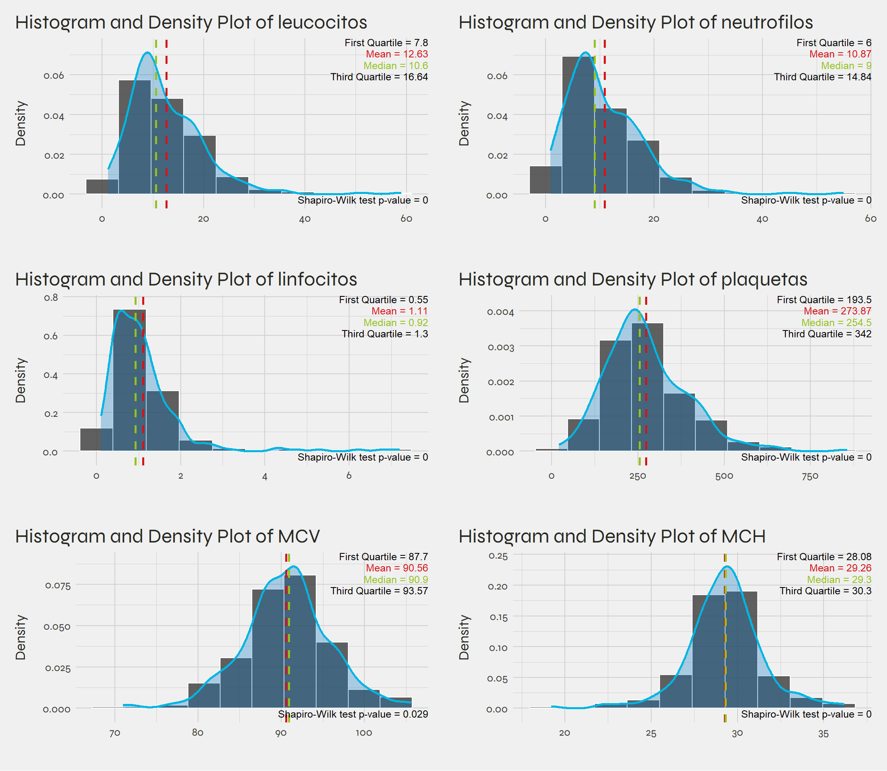
# Formal and visual exploration
total_plots(biochem_numerical)
# Formal and visual exploration
total_plots(electro_numerical)
In this part, density plots will be used to illustrate the data grouped by the outcome. Other plots will not be included in the analysis, as a table with more detailed information will be presented. The questions we will ask ourselves are: Does the data appear to be normally distributed? and are the variances between groups equal?
# Selection of numerical variables of survivors
surv_numerical <- data |>
dplyr::select(where(is.numeric), a_f) |>
dplyr::filter(a_f == "Survivor")
# Selection of numerical variables of non-survivors
non_numerical <- data |>
dplyr::select(where(is.numeric), a_f) |>
dplyr::filter(a_f == "Non-survivor")# Summary statistics of survivors
lapply(surv_numerical, function(x)
summary(x))
# Summary statistics of non-survivors
lapply(non_numerical, function(x)
summary(x))# Exploration of frec_respiratoria by group
p1 <- group_stat_table_plot(data, "frec_respiratoria", "a_f")
# Exploration of frec_cardiaca by group
p2 <- group_stat_table_plot(data, "frec_cardiaca", "a_f")
# Exploration of SBP by group
p3 <- group_stat_table_plot(data, "p_a_sistolica", "a_f")
# Exploration of DBP by group
p4 <- group_stat_table_plot(data, "p_a_diastolica", "a_f")
p1 + p2 + p3 + p4 + plot_annotation(
theme = theme(plot.background = element_rect(fill = "#f0f0f0", color = NA)))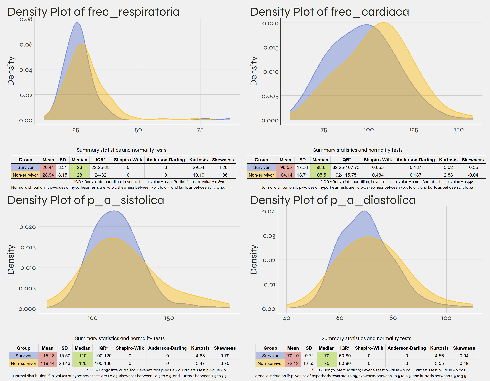
# Exploration of WBC by group
p1 <- group_stat_table_plot(data, "leucocitos", "a_f")
# Exploration of neutrophils by group
p2 <- group_stat_table_plot(data, "neutrofilos", "a_f")
# Exploration of lymphocytes by group
p3 <- group_stat_table_plot(data, "linfocitos", "a_f")
# Exploration of platelets by group
p4 <- group_stat_table_plot(data, "plaquetas", "a_f")
p1 + p2 + p3 + p4 + plot_annotation(
theme = theme(plot.background = element_rect(fill = "#f0f0f0", color = NA)))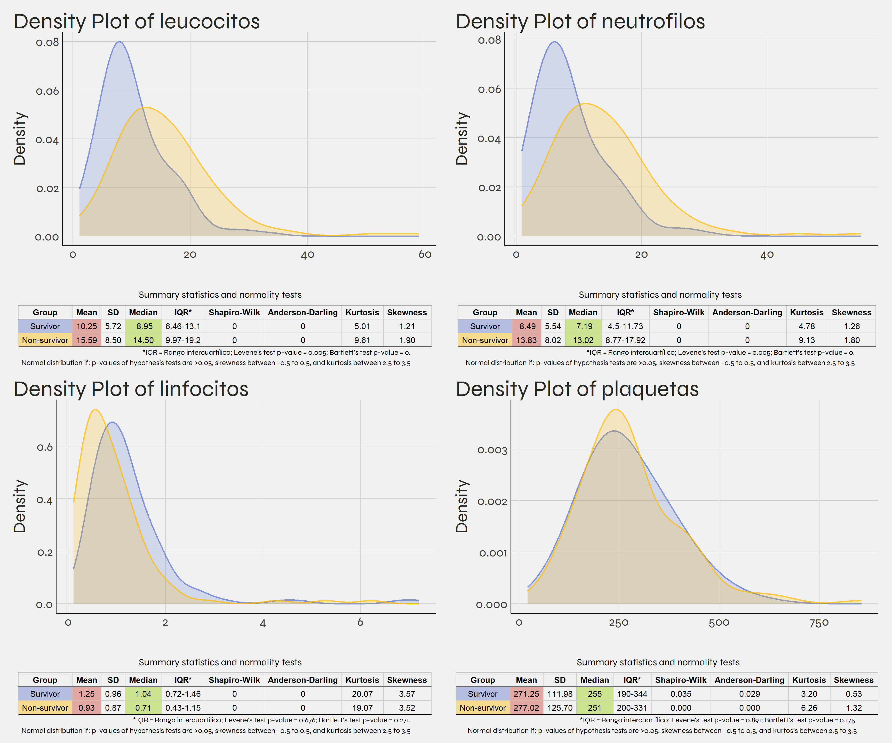
# Exploration of glucose by group
p1 <- group_stat_table_plot(data, "glucosa", "a_f")
# Exploration of BUN by group
p2 <- group_stat_table_plot(data, "urea", "a_f")
# Exploration of Hb by group
p3 <- group_stat_table_plot(data, "hemoglobina", "a_f")
# Exploration of lymphocytes by group
p4 <- group_stat_table_plot(data, "linfocitos", "a_f")
p1 + p2 + p3 + p4 + plot_annotation(
theme = theme(plot.background = element_rect(fill = "#f0f0f0", color = NA)))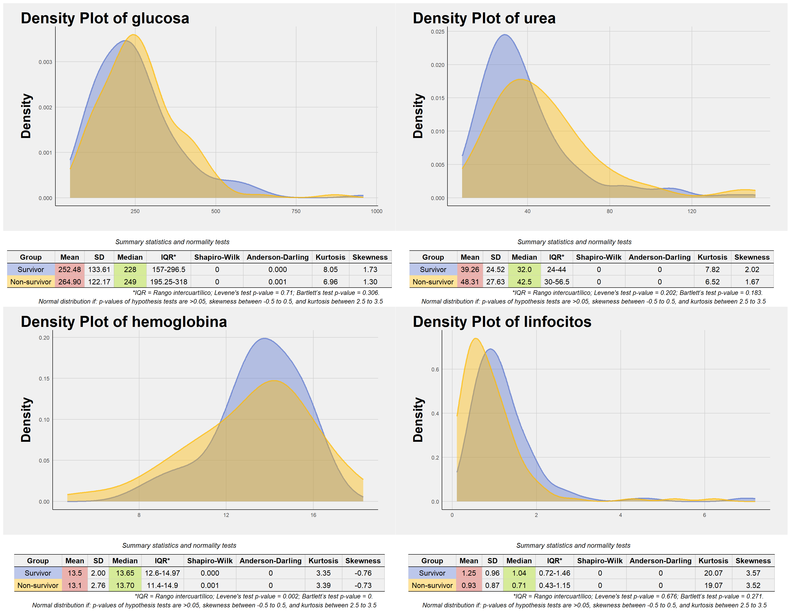
# Exploration of age by group
p1 <- group_stat_table_plot(data, "SaO2", "a_f")
# Exploration of white-cells by group
p2 <- group_stat_table_plot(data, "PaO2_FiO2", "a_f")
# Exploration of neutrophils by group
p3 <- group_stat_table_plot(data, "PaO2", "a_f")
# Exploration of lymphocytes by group
p4 <- group_stat_table_plot(data, "FiO2_aga", "a_f")
p1 + p2 + p3 + p4 + plot_annotation(
theme = theme(plot.background = element_rect(fill = "#f0f0f0", color = NA)))
The correlation between independent variables will be explored in order to identify multicollinearity.
📝NOTE: ggplot objects can’t process markdown text
# Selection of numerical variables
data_num = data |>
dplyr::select(where(is.numeric)) |>
na.omit()
# Rename variables
cor_data = rename(
data_num,
"Age" = edad,
"Respiratory rate (BPM)" = frec_respiratoria,
"Heart rate (BPM)" = frec_cardiaca,
"SBP" = p_a_sistolica,
"DBP" = p_a_diastolica,
"White-cells" = leucocitos,
"Neutrophils" = neutrofilos,
"Lymphocytes" = linfocitos,
"Platelets" = plaquetas,
"MCV" = MCV,
"MCH" = MCH,
"Hemoglobin" = hemoglobina,
"Hematocrit" = hematocrito,
"Serum creatinine" = creatinina,
"BUN" = urea,
"Glucose" = glucosa,
"pH" = ph,
"Anion Gap" = anion_gap,
"Sodium" = sodio,
"Potasium" = potasio,
"Chlorine" = cloro,
"Calcium" = calcio,
"SaO2" = SaO2,
"FiO2" = FiO2_aga,
"PaO2:FiO2 ratio" = PaO2_FiO2,
"PaO2" = PaO2,
"PCO2" = PCO2,
"HCO3" = HCO3,
"Duration of disease" = t_de_enfermedad
)
# Correlation matrix
corr <- round(cor(cor_data), 1)
# Visualization
FS1 <- my_ggcorrplor(corr)
# View
FS1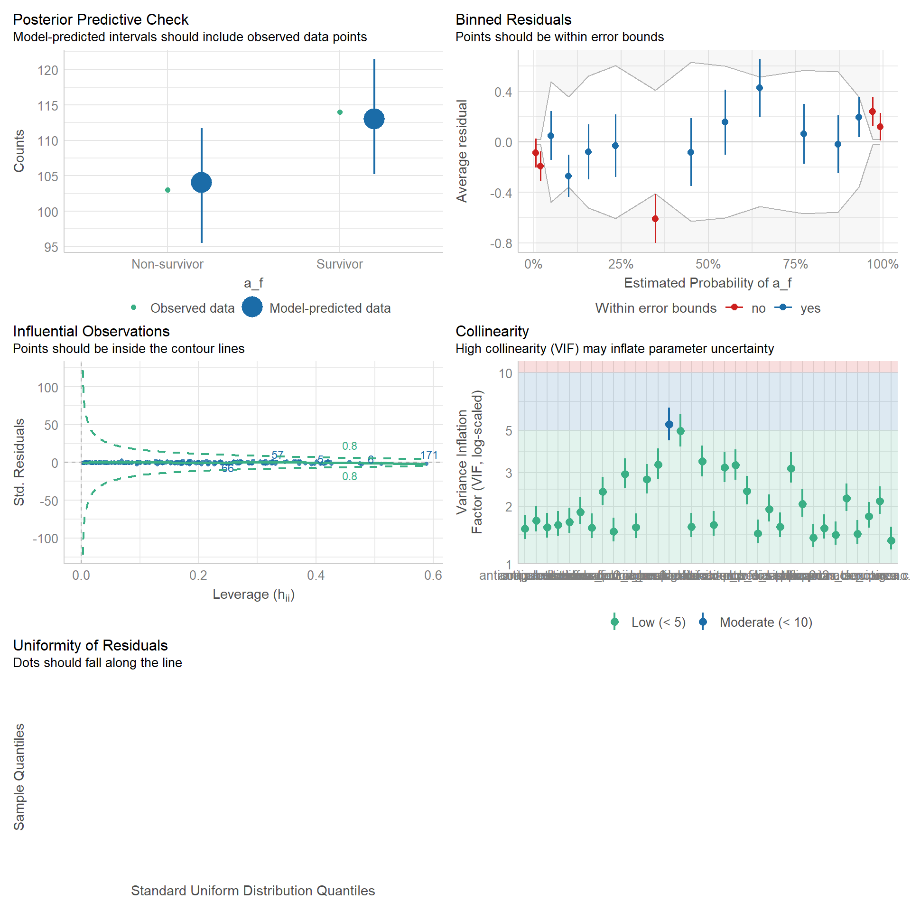
# Visualization
FS1_grey <- my_ggcorrplor_grey(corr)With the exception of white-cells and the PaO2:FiO2 ratio, the numerical variables are independent of each other. In the case of using white-cells and neutrophils or lymphocytes, it is possible that this information may become redundant and generate biased estimates. The same occurs with the PaO2:FiO2 ratio and the FiO2 or PaO2; given the clinical relevance of the PaO2:FiO2 ratio, it is preferable to work only with the latter.
# Demographic characteristics and clinical history
table_1.1 <- data |>
tbl_summary(
include = c(edad:t_de_enfermedad, a_f),
by = a_f,
percent = "column",
digits = list(all_continuous() ~ c(1, 1))
) |>
add_overall() |>
add_p() |>
bold_p(t = 0.05) |>
modify_header(all_stat_cols() ~ "**{level}** (n = {n})",
stat_0 = "**All patients** (n = {N})",
p.value = "**p value**") |>
modify_spanning_header(all_stat_cols(stat_0 = FALSE) ~ "**Mortality**") |>
modify_caption("**Table 1**. Demographic and clinical characteristics of the patients")
# Signs and symptoms
table_1.2 <- data |>
tbl_summary(
include = c(fiebre:sensorio, a_f),
by = a_f,
percent = "column",
digits = list(all_continuous() ~ c(1, 1))
) |>
modify_header(all_stat_cols() ~ "**{level}** (n = {n})") |>
add_overall() |>
add_p() |>
bold_p(t = 0.05)
# Vital signs
table_1.3 <- data |>
tbl_summary(
include = c(frec_respiratoria:p_a_diastolica.c, a_f),
by = a_f,
percent = "column",
digits = list(all_continuous() ~ c(1, 1))
) |>
modify_header(all_stat_cols() ~ "**{level}** (n = {n})") |>
add_overall() |>
add_p() |>
bold_p(t = 0.05)
# Stack tables
table_1 = tbl_stack(
list(table_1.1, table_1.2, table_1.3),
group_header = c(
"Demographic characteristics and clinical history",
"Signs and symtoms",
"Vital signs"),
quiet = TRUE
)
# Convert gtsummary object to a flextable object and format character columns
flex_table_1 <- table_1 |>
gtsummary::as_flex_table() |>
my_flextable_theme() |>
flextable::fontsize(part = "all", size = 10) |>
ftExtra::colformat_md()
# View (gtsummary object)
table_1| Characteristic | All patients (n = 287) |
Mortality
|
p value1 | |
|---|---|---|---|---|
| Survivor (n = 155) | Non-survivor (n = 132) | |||
| Demographic characteristics and clinical history | ||||
| Age (years), Median (IQR) | 60.0 (51.0 – 68.0) | 56.0 (47.0 – 65.0) | 64.5 (57.5 – 73.0) | <0.001 |
| Age (years), n (%) | <0.001 | |||
| < 61 | 149 (52) | 102 (66) | 47 (36) | |
| >= 61 | 138 (48) | 53 (34) | 85 (64) | |
| Sex, n (%) | 0.46 | |||
| Female | 98 (34) | 50 (32) | 48 (36) | |
| Male | 189 (66) | 105 (68) | 84 (64) | |
| Smoking, n (%) | 2 (0.7) | 1 (0.6) | 1 (0.8) | >0.99 |
| Alcoholism, n (%) | 2 (0.7) | 1 (0.6) | 1 (0.8) | >0.99 |
| Dyslipidemia, n (%) | 4 (1.4) | 3 (1.9) | 1 (0.8) | 0.63 |
| Obesity, n (%) | 44 (15) | 29 (19) | 15 (11) | 0.085 |
| Hypertension, n (%) | 102 (36) | 43 (28) | 59 (45) | 0.003 |
| Cerebrovascular disease, n (%) | 4 (1.4) | 0 (0) | 4 (3.0) | 0.044 |
| Cancer, n (%) | 1 (0.3) | 0 (0) | 1 (0.8) | 0.46 |
| HIV, n (%) | 1 (0.3) | 0 (0) | 1 (0.8) | 0.46 |
| Immunesupressive disease, n (%) | 3 (1.0) | 1 (0.6) | 2 (1.5) | 0.60 |
| Chronic renal disease, n (%) | 10 (3.5) | 5 (3.2) | 5 (3.8) | >0.99 |
| Hemodialysis, n (%) | 5 (1.9) | 1 (0.8) | 4 (3.0) | 0.37 |
| Unknown | 26 | 26 | 0 | |
| Asthma, n (%) | 6 (2.1) | 4 (2.6) | 2 (1.5) | 0.69 |
| Duration of disease (days), Median (IQR) | 7.0 (5.0 – 10.0) | 7.0 (5.0 – 10.0) | 7.0 (5.0 – 10.0) | 0.23 |
| Unknown | 3 | 1 | 2 | |
| Signs and symtoms | ||||
| Fever, n (%) | 170 (59) | 82 (53) | 88 (67) | 0.018 |
| Dry cought, n (%) | 218 (76) | 113 (73) | 105 (80) | 0.19 |
| Sore throat, n (%) | 92 (32) | 59 (38) | 33 (25) | 0.018 |
| General malaise, n (%) | 206 (72) | 115 (74) | 91 (69) | 0.32 |
| Headache, n (%) | 62 (22) | 49 (32) | 13 (9.8) | <0.001 |
| Tachypnea, n (%) | 99 (34) | 65 (42) | 34 (26) | 0.004 |
| Dyspnea, n (%) | 242 (84) | 120 (77) | 122 (92) | <0.001 |
| Anosmia, n (%) | 16 (5.6) | 11 (7.1) | 5 (3.8) | 0.22 |
| Dysgeusia, n (%) | 13 (4.5) | 8 (5.2) | 5 (3.8) | 0.58 |
| Lung crackles, n (%) | 141 (49) | 91 (59) | 50 (38) | <0.001 |
| Diarrhea, n (%) | 18 (6.3) | 8 (5.2) | 10 (7.6) | 0.40 |
| Vomiting, n (%) | 17 (5.9) | 6 (3.9) | 11 (8.3) | 0.11 |
| Asthenia, n (%) | 48 (17) | 34 (22) | 14 (11) | 0.010 |
| Abdominal pain, n (%) | 12 (4.2) | 8 (5.2) | 4 (3.0) | 0.37 |
| Weight loss, n (%) | 3 (1.0) | 3 (1.9) | 0 (0) | 0.25 |
| Polyuria, n (%) | 12 (4.2) | 9 (5.8) | 3 (2.3) | 0.14 |
| Polidipsia, n (%) | 10 (3.5) | 8 (5.2) | 2 (1.5) | 0.11 |
| Poliphagia, n (%) | 5 (1.7) | 4 (2.6) | 1 (0.8) | 0.38 |
| Sensory, n (%) | <0.001 | |||
| Awake | 250 (91) | 151 (97) | 99 (83) | |
| Sleepy | 17 (6.2) | 3 (1.9) | 14 (12) | |
| Drowsy | 7 (2.6) | 1 (0.6) | 6 (5.0) | |
| Unknown | 13 | 0 | 13 | |
| Vital signs | ||||
| Respiratory rate (BPM), Median (IQR) | 26.0 (23.0 – 30.0) | 26.0 (22.0 – 28.0) | 28.0 (24.0 – 32.0) | <0.001 |
| Unknown | 20 | 9 | 11 | |
| Respiratory rate (BPM), n (%) | 0.006 | |||
| 24 - 30 | 138 (52) | 76 (52) | 62 (51) | |
| < 24 | 70 (26) | 47 (32) | 23 (19) | |
| > 30 | 59 (22) | 23 (16) | 36 (30) | |
| Unknown | 20 | 9 | 11 | |
| Heart rate (BPM), Median (IQR) | 100.0 (85.5 – 113.0) | 98.0 (82.0 – 108.0) | 105.5 (92.0 – 116.0) | <0.001 |
| Unknown | 3 | 1 | 2 | |
| Heart rate (BPM), n (%) | <0.001 | |||
| < 100 | 133 (46) | 86 (55) | 47 (36) | |
| >= 100 | 154 (54) | 69 (45) | 85 (64) | |
| SBP (mmHg), Median (IQR) | 115.0 (100.0 – 130.0) | 110.0 (100.0 – 120.0) | 120.0 (100.0 – 130.0) | 0.25 |
| Unknown | 4 | 0 | 4 | |
| SBP (mmHg), n (%) | 0.002 | |||
| < 140 | 246 (86) | 142 (92) | 104 (79) | |
| >= 140 | 41 (14) | 13 (8.4) | 28 (21) | |
| DBP (mmHg), Median (IQR) | 70.0 (60.0 – 80.0) | 70.0 (60.0 – 80.0) | 70.0 (60.0 – 80.0) | 0.13 |
| Unknown | 4 | 0 | 4 | |
| DBP (mmHg), n (%) | 0.009 | |||
| < 90 | 258 (90) | 146 (94) | 112 (85) | |
| >= 90 | 29 (10) | 9 (5.8) | 20 (15) | |
| 1 Wilcoxon rank sum test; Pearson’s Chi-squared test; Fisher’s exact test | ||||
# Laboratory findings
table_2.1 <- data |>
tbl_summary(
include = c(leucocitos:calcio, a_f),
by = a_f,
percent = "column",
digits = list(all_continuous() ~ c(1, 1))
) |>
add_overall() |>
add_p() |>
bold_p(t = 0.05) |>
modify_header(all_stat_cols() ~ "**{level}** (n = {n})",
stat_0 = "**All patients** (n = {N})",
p.value = "**p value**") |>
modify_column_alignment(columns = everything(), align = "left") |>
modify_spanning_header(all_stat_cols(stat_0 = FALSE) ~ "**Mortality**") |>
modify_caption("Table 2. Laboratory findings and treatment of patients")
# Blood gas findings
table_2.2 <- data |>
tbl_summary(
include = c(SaO2:HCO3.c, a_f),
by = a_f,
percent = "column",
digits = list(all_continuous() ~ c(1, 1))
) |>
modify_header(all_stat_cols() ~ "**{level}** (n = {n})") |>
add_overall() |>
add_p() |>
bold_p(t = 0.05)
# Treatments
table_2.3 <- data |>
tbl_summary(
include = c(antibioticos:pronacion, a_f),
by = a_f,
percent = "column",
digits = list(all_continuous() ~ c(1, 1))
) |>
modify_header(all_stat_cols() ~ "**{level}** (n = {n})") |>
add_overall() |>
add_p() |>
bold_p(t = 0.05)
# Stack tables
table_2 = tbl_stack(
list(table_2.1, table_2.2, table_2.3),
group_header = c("Laboratory findings", "Blood gas findings", "Treatment"),
quiet = TRUE
)
# Convert gtsummary object to a flextable object and format character columns
flex_table_2 <- table_2 |>
gtsummary::as_flex_table() |>
my_flextable_theme() |>
flextable::fontsize(part = "all", size = 10) |>
ftExtra::colformat_md()
# View
flex_table_2
| Mortality |
| |||
|---|---|---|---|---|---|
Group | Characteristic | All patients (n = 287) | Survivor (n = 155) | Non-survivor (n = 132) | p value1 |
Laboratory findings | White-cells (×109/L), Median (IQR) | 10.6 (7.8 – 16.6) | 9.0 (6.5 – 13.1) | 14.5 (10.0 – 19.2) | <0.001 |
Unknown | 18 | 6 | 12 | ||
White-cells (×109/L), n (%) | <0.001 | ||||
4-10 | 104 (39) | 75 (50) | 29 (24) | ||
< 4 | 19 (7.1) | 15 (10) | 4 (3.3) | ||
10 | 146 (54) | 59 (40) | 87 (73) | ||
Unknown | 18 | 6 | 12 | ||
Neutrophils (×109/L), Median (IQR) | 9.0 (6.0 – 14.8) | 7.2 (4.5 – 11.7) | 13.0 (8.7 – 18.0) | <0.001 | |
Unknown | 18 | 6 | 12 | ||
Neutrophils (×109/L), n (%) | <0.001 | ||||
<= 6.3 | 91 (32) | 67 (43) | 24 (18) | ||
6.3 | 196 (68) | 88 (57) | 108 (82) | ||
Lymphocytes (×109/L), Median (IQR) | 0.9 (0.6 – 1.3) | 1.0 (0.7 – 1.5) | 0.7 (0.4 – 1.2) | <0.001 | |
Unknown | 19 | 7 | 12 | ||
Lymphocytes (×109/L), n (%) | 0.010 | ||||
= 1 | 141 (49) | 87 (56) | 54 (41) | ||
< 1 | 146 (51) | 68 (44) | 78 (59) | ||
Platelets (×109/L), Median (IQR) | 254.5 (193.0 – 342.0) | 255.0 (190.0 – 344.0) | 251.0 (195.0 – 340.0) | 0.93 | |
Unknown | 7 | 2 | 5 | ||
Platelets (×109/L), n (%) | 0.88 | ||||
= 125 | 266 (93) | 144 (93) | 122 (92) | ||
< 125 | 21 (7.3) | 11 (7.1) | 10 (7.6) | ||
MCV (mm3), Median (IQR) | 90.9 (87.7 – 93.6) | 90.2 (87.1 – 92.9) | 91.3 (88.2 – 94.4) | 0.048 | |
Unknown | 13 | 3 | 10 | ||
MCH (pg), Median (IQR) | 29.3 (28.1 – 30.3) | 29.2 (27.9 – 30.2) | 29.4 (28.4 – 30.6) | 0.045 | |
Unknown | 14 | 3 | 11 | ||
Hemoglobin (g/dL), Median (IQR) | 13.7 (12.0 – 14.9) | 13.7 (12.6 – 15.0) | 13.7 (11.4 – 14.9) | 0.42 | |
Unknown | 6 | 1 | 5 | ||
Hemoglobin (g/dL), n (%) | 0.022 | ||||
12 | 216 (75) | 125 (81) | 91 (69) | ||
<= 12 | 71 (25) | 30 (19) | 41 (31) | ||
Hematocrit (%), Median (IQR) | 42.0 (37.5 – 46.0) | 42.7 (38.5 – 46.0) | 41.7 (35.2 – 46.0) | 0.23 | |
Unknown | 7 | 1 | 6 | ||
Hematocrit (%), n (%) | 0.031 | ||||
= 36 | 229 (80) | 131 (85) | 98 (74) | ||
< 36 | 58 (20) | 24 (15) | 34 (26) | ||
Serum creatinine (mg/dL), Median (IQR) | 0.8 (0.6 – 1.2) | 0.7 (0.6 – 1.0) | 1.0 (0.7 – 1.5) | <0.001 | |
Unknown | 20 | 14 | 6 | ||
Serum creatinine (mg/dL), n (%) | 0.001 | ||||
< 1.3 | 213 (74) | 127 (82) | 86 (65) | ||
= 1.3 | 74 (26) | 28 (18) | 46 (35) | ||
BUN (mg/dL), Median (IQR) | 36.1 (26.8 – 52.0) | 32.0 (24.0 – 44.0) | 42.5 (30.0 – 57.0) | <0.001 | |
Unknown | 34 | 14 | 20 | ||
BUN (mg/dL), n (%) | 0.025 | ||||
< 20 | 30 (10) | 22 (14) | 8 (6.1) | ||
= 20 | 257 (90) | 133 (86) | 124 (94) | ||
Glucose (mg/dL), Median (IQR) | 239.0 (170.0 – 309.0) | 228.0 (156.0 – 297.0) | 249.0 (194.5 – 319.0) | 0.18 | |
Unknown | 20 | 12 | 8 | ||
pH, Median (IQR) | 7.4 (7.4 – 7.5) | 7.4 (7.4 – 7.5) | 7.4 (7.4 – 7.5) | 0.28 | |
Unknown | 8 | 4 | 4 | ||
pH, n (%) | 0.37 | ||||
7.35 - 7.45 | 173 (62) | 92 (61) | 81 (63) | ||
< 7.35 | 42 (15) | 20 (13) | 22 (17) | ||
7.45 | 64 (23) | 39 (26) | 25 (20) | ||
Unknown | 8 | 4 | 4 | ||
Anion Gap (mEq/L), Median (IQR) | 10.5 (7.1 – 14.0) | 10.0 (6.4 – 13.4) | 11.4 (7.8 – 14.4) | 0.057 | |
Unknown | 12 | 5 | 7 | ||
Anion Gap (mEq/L), n (%) | 0.16 | ||||
7 - 13 | 128 (47) | 68 (45) | 60 (48) | ||
< 7 | 67 (24) | 43 (29) | 24 (19) | ||
13 | 80 (29) | 39 (26) | 41 (33) | ||
Unknown | 12 | 5 | 7 | ||
Sodium (mmol/L), Median (IQR) | 137.0 (133.0 – 142.0) | 137.0 (133.0 – 142.0) | 137.0 (133.0 – 142.0) | 0.65 | |
Unknown | 7 | 4 | 3 | ||
Potasium (mEq/L), Median (IQR) | 3.8 (3.5 – 4.2) | 3.8 (3.5 – 4.1) | 4.0 (3.5 – 4.4) | 0.057 | |
Unknown | 7 | 4 | 3 | ||
Chlorine (mmol/L), Median (IQR) | 1.2 (1.1 – 1.2) | 1.2 (1.1 – 1.2) | 1.2 (1.1 – 1.2) | 0.34 | |
Unknown | 8 | 5 | 3 | ||
Calcium (mmol/L), Median (IQR) | 1.2 (1.1 – 1.2) | 1.2 (1.1 – 1.2) | 1.2 (1.1 – 1.2) | 0.34 | |
Unknown | 8 | 5 | 3 | ||
Blood gas findings | SaO2 (%), Median (IQR) | 90.0 (83.0 – 94.0) | 92.0 (88.0 – 95.0) | 85.0 (78.0 – 91.5) | <0.001 |
Unknown | 4 | 0 | 4 | ||
SaO2, n (%) | 0.020 | ||||
= 94 | 80 (28) | 52 (34) | 28 (21) | ||
< 94 | 207 (72) | 103 (66) | 104 (79) | ||
FiO2 (%), Median (IQR) | 40.0 (21.0 – 80.0) | 38.0 (21.0 – 40.0) | 80.0 (32.0 – 80.0) | <0.001 | |
Unknown | 10 | 6 | 4 | ||
FiO2 (%), n (%) | 0.23 | ||||
21 (O2 therapy) | 203 (71) | 105 (68) | 98 (74) | ||
21 | 84 (29) | 50 (32) | 34 (26) | ||
PaO2:FiO2 ratio, Median (IQR) | 191.0 (95.1 – 298.0) | 238.5 (142.0 – 326.0) | 123.0 (77.5 – 251.0) | <0.001 | |
Unknown | 10 | 5 | 5 | ||
PaO2:FiO2 ratio, n (%) | <0.001 | ||||
200 | 135 (47) | 88 (57) | 47 (36) | ||
<= 200 | 152 (53) | 67 (43) | 85 (64) | ||
PaO2 (mmHg), Median (IQR) | 73.1 (61.0 – 91.0) | 78.0 (67.8 – 94.3) | 64.9 (52.1 – 80.5) | <0.001 | |
Unknown | 14 | 8 | 6 | ||
PaO2, n (%) | <0.001 | ||||
= 60 | 223 (78) | 141 (91) | 82 (62) | ||
< 60 | 64 (22) | 14 (9.0) | 50 (38) | ||
PCO2 (mmHg), Median (IQR) | 31.4 (27.8 – 35.0) | 32.2 (28.8 – 35.0) | 30.2 (26.4 – 35.2) | 0.021 | |
Unknown | 9 | 4 | 5 | ||
PCO2 (mmHg), n (%) | 0.55 | ||||
< 36 | 222 (77) | 122 (79) | 100 (76) | ||
= 36 | 65 (23) | 33 (21) | 32 (24) | ||
HCO3 (mmol/L), Median (IQR) | 20.7 (17.9 – 23.0) | 21.1 (19.7 – 23.1) | 19.9 (15.8 – 22.6) | 0.003 | |
Unknown | 9 | 5 | 4 | ||
HCO3 (mEq/L), n (%) | 0.032 | ||||
21 - 28 | 119 (43) | 75 (50) | 44 (34) | ||
< 21 | 148 (53) | 70 (47) | 78 (61) | ||
28 | 11 (4.0) | 5 (3.3) | 6 (4.7) | ||
Unknown | 9 | 5 | 4 | ||
Treatment | Antibiotics, n (%) | 278 (97) | 146 (94) | 132 (100) | 0.004 |
Corticosteroids, n (%) | 208 (72) | 97 (63) | 111 (84) | <0.001 | |
Anticoagulants, n (%) | <0.001 | ||||
No | 55 (19) | 41 (26) | 14 (11) | ||
Enoxaparin | 232 (81) | 114 (74) | 118 (89) | ||
Antiparasitics, n (%) | 0.085 | ||||
No | 231 (80) | 119 (77) | 112 (85) | ||
Ivermectin | 56 (20) | 36 (23) | 20 (15) | ||
Antimalarials, n (%) | 0.003 | ||||
No | 162 (56) | 100 (65) | 62 (47) | ||
Hydroxychloroquine | 125 (44) | 55 (35) | 70 (53) | ||
Pronation, n (%) | 115 (44) | 61 (47) | 54 (41) | 0.30 | |
Unknown | 26 | 26 | 0 | ||
1Wilcoxon rank sum test; Pearson's Chi-squared test | |||||
In the univariate analysis, self-reported or not enough event variables were eliminated, this will help to avoid overfitting in the subsequent multivariable analysis. Other variables such as plaquetas, plaquetas.c, hemoglobina, hematocrito, glucosa, ph, ph.c, anion_gap, anion_gap.c, sodio, potasio, cloro, and calcio, FiO2_aga.c, PCO2.c, antiparasitarios, and pronacion, showed no differences between groups in the bivariate analysis (Table 2).
| Self-reported | Not enough event (<10) |
|---|---|
| dolor_de_garganta, malestar_general, cefalea, anosmia, disgeusia, astenia, dolor_abdominal, perdida_de_peso, sensorio. | tabaquismo, alcoholismo, dislipidemia, ecv, neoplasia, vih, e_inmunosupresora, erc, hemodialisis, asma_bronquial, anosmia, disgeusia, diarrrea, emesis, poliuria, polidipsia, polifagia, sensorio, ingreso_a_uci, antibioticos. |
data_uv <- data |>
dplyr::select(
# Demographic characteristics and clinical history
edad.c,
sexo,
obesidad,
hta,
# Signs and symptoms
fiebre,
tos,
taquipnea,
disnea,
estertores_pulmonares,
# Vital signs
frec_respiratoria.c,
frec_cardiaca.c,
p_a_sistolica.c,
p_a_diastolica.c,
# Laboratory findings
leucocitos.c,
neutrofilos.c,
linfocitos.c,
plaquetas.c,
MCV,
MCH,
hemoglobina.c,
hematocrito.c,
creatinina.c,
urea.c,
# Blood gas findings
SaO2.c,
FiO2_aga,
PaO2_FiO2.c,
PaO2.c,
PCO2,
HCO3.c,
# Treatment
corticoides,
anticoagulantes,
antiparasitarios,
antipaludicos,
pronacion,
# outcomes
a_f
) |>
na.omit() # Eliminate 82 observations📝NOTE: The variables included in the univariate regression analysis were selected based on the results of the bivariate analysis.
table_3.1 <- data_uv |>
tbl_uvregression(
include = c(edad.c:pronacion),
y = a_f,
method = glm,
method.args = list(family = binomial),
exponentiate = TRUE,
conf.int = TRUE,
hide_n = TRUE,
add_estimate_to_reference_rows = FALSE,
pvalue_fun = ~ style_pvalue(.x, digits = 3),
estimate_fun = ~ style_number(.x, digits = 2),
label = list(
edad.c ~ "Age (years)",
sexo ~ "Sex",
obesidad ~ "Obesity",
hta ~ "Hypertension",
fiebre ~ "Fever",
tos ~ "Dry cought",
taquipnea ~ "Tachypnea",
disnea ~ "Dyspnea",
estertores_pulmonares ~ "Lung crackles",
frec_respiratoria.c ~ "Respiratory rate (BPM)",
frec_cardiaca.c ~ "Heart rate (BPM)",
p_a_sistolica.c ~ "SBP (mmHg)",
p_a_diastolica.c ~ "DBP (mmHg)",
leucocitos.c ~ "White-cells (×10^9^/L)",
neutrofilos.c ~ "Neutrophils (×10^9^/L)",
linfocitos.c ~ "Lymphocytes (×10^9^/L)",
plaquetas.c ~ "Platelets (×10^9^/L)",
MCV ~ "MCV (mm^3^)",
MCH ~ "MCH (pg)",
hemoglobina.c ~ "Hemoglobin (g/dL)",
hematocrito.c ~ "Hematocrit (%)",
creatinina.c ~ "Serum creatinine (mg/dL)",
urea.c ~ "BUN (mg/dL)",
SaO2.c ~ "SaO~2~",
FiO2_aga ~ "FiO~2~ (%)",
PaO2_FiO2.c ~ "PaO~2~:FiO~2~ ratio",
PaO2.c ~ "PaO~2~ (mmHg)",
PCO2 ~ "PCO~2~ (mmHg)",
HCO3.c ~ "HCO~3~ (mmol/L)",
corticoides ~ "Corticosteroids",
anticoagulantes ~ "Anticoagulants",
antiparasitarios ~ "Antiparasitics",
antipaludicos ~ "Antimalarials",
pronacion ~ "Pronation"
)
) |>
bold_labels() |>
bold_p(t = 0.05) |>
modify_header(estimate = "**Univariate OR**",
p.value = "**p value**")# Model
full_multivariable <-
glm(
a_f ~ edad.c + sexo + obesidad + hta + fiebre + tos + taquipnea + disnea +
estertores_pulmonares + frec_respiratoria.c + frec_cardiaca.c +
p_a_sistolica.c + p_a_diastolica.c + leucocitos.c + neutrofilos.c +
linfocitos.c + plaquetas.c + MCV + MCH + hemoglobina.c + hematocrito.c +
creatinina.c + urea.c + SaO2.c + FiO2_aga + PaO2_FiO2.c +
PaO2.c + PCO2 + HCO3.c + corticoides + anticoagulantes + antiparasitarios +
antipaludicos + pronacion,
data = data_uv,
family = binomial(link = "logit")
) |>
tbl_regression(
exponentiate = TRUE,
conf.int = TRUE,
pvalue_fun = ~ style_pvalue(.x, digits = 3),
estimate_fun = ~ style_number(.x, digits = 2)
) |>
bold_p(t = 0.05) |>
# Add Generalized Variance Inflation Factor (GVIF)
add_vif()# Model
m1 = glm(
a_f ~ edad.c + sexo + obesidad + hta + fiebre + tos + taquipnea + disnea +
estertores_pulmonares + frec_respiratoria.c + frec_cardiaca.c +
p_a_sistolica.c + p_a_diastolica.c + leucocitos.c + neutrofilos.c +
linfocitos.c + plaquetas.c + MCV + MCH + hemoglobina.c + hematocrito.c +
creatinina.c + urea.c + SaO2.c + FiO2_aga + PaO2_FiO2.c +
PaO2.c + PCO2 + HCO3.c + corticoides + anticoagulantes + antiparasitarios +
antipaludicos + pronacion,
data = data_uv,
family = binomial(link = "logit")
)# Visual check of model assumptions
performance::check_model(m1)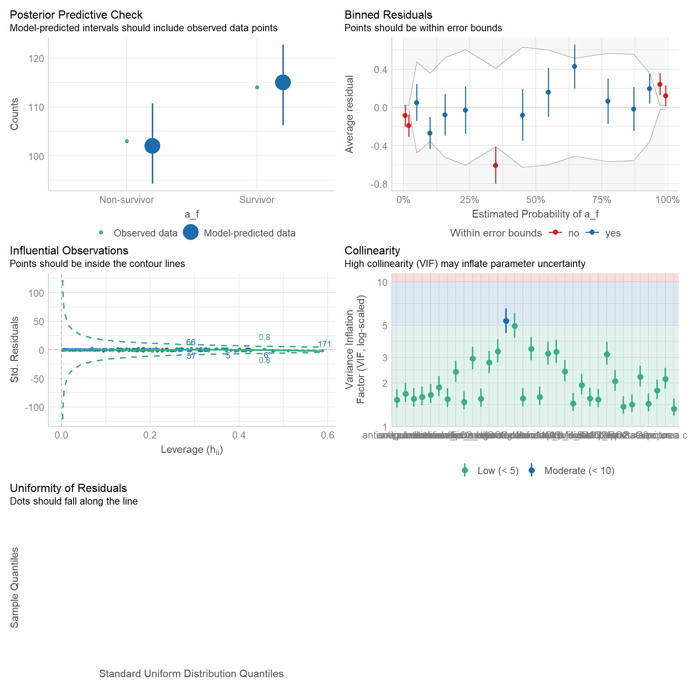
# Indices of model performance
performance::model_performance(m1)# Indices of model performance
AIC | AICc | BIC | Tjur's R2 | RMSE | Sigma | Log_loss | Score_log
------------------------------------------------------------------------------
238.569 | 255.220 | 367.005 | 0.517 | 0.347 | 1.000 | 0.375 | -123.763
AIC | Score_spherical | PCP
---------------------------------
238.569 | 0.020 | 0.759# Check for Multicollinearity
performance::check_collinearity(m1, ci = NULL)# Check for Multicollinearity
Low Correlation
Term VIF Increased SE Tolerance
edad.c 1.55 1.24 0.65
sexo 1.43 1.20 0.70
obesidad 1.44 1.20 0.69
hta 1.56 1.25 0.64
fiebre 1.48 1.22 0.68
tos 2.13 1.46 0.47
taquipnea 1.78 1.33 0.56
disnea 1.87 1.37 0.54
estertores_pulmonares 2.38 1.54 0.42
frec_respiratoria.c 2.76 1.66 0.36
frec_cardiaca.c 1.55 1.24 0.65
p_a_sistolica.c 1.57 1.25 0.64
p_a_diastolica.c 1.93 1.39 0.52
leucocitos.c 3.43 1.85 0.29
neutrofilos.c 2.40 1.55 0.42
linfocitos.c 1.60 1.26 0.63
plaquetas.c 1.37 1.17 0.73
MCV 3.28 1.81 0.30
MCH 3.19 1.79 0.31
hemoglobina.c 4.97 2.23 0.20
creatinina.c 1.65 1.29 0.60
urea.c 1.32 1.15 0.76
SaO2.c 2.20 1.48 0.45
FiO2_aga 2.95 1.72 0.34
PaO2_FiO2.c 3.16 1.78 0.32
PaO2.c 1.53 1.24 0.65
PCO2 2.05 1.43 0.49
HCO3.c 3.31 1.82 0.30
corticoides 1.60 1.26 0.63
anticoagulantes 1.53 1.24 0.65
antiparasitarios 1.56 1.25 0.64
antipaludicos 1.69 1.30 0.59
pronacion 1.41 1.19 0.71
Moderate Correlation
Term VIF Increased SE Tolerance
hematocrito.c 5.37 2.32 0.19mv_reg_stepbackward <- m1 |>
step(direction = "backward", trace = FALSE)# Forward model
mv_reg_stepforward <- m1 |>
step(direction = "forward", trace = FALSE)
# Forward formula-based model
m2 <- glm(
a_f ~ edad.c + sexo + obesidad + hta + fiebre + tos + taquipnea + disnea +
estertores_pulmonares + frec_respiratoria.c + frec_cardiaca.c +
p_a_sistolica.c + p_a_diastolica.c + leucocitos.c + neutrofilos.c +
linfocitos.c + plaquetas.c + MCV + MCH + hemoglobina.c + hematocrito.c +
creatinina.c + urea.c + SaO2.c + FiO2_aga + PaO2_FiO2.c +
PaO2.c + PCO2 + HCO3.c + corticoides + anticoagulantes + antiparasitarios +
antipaludicos + pronacion,
data = data_uv,
family = binomial(link = "logit")
)# Visual check of model assumptions
performance::check_model(m2)
# Indices of model performance
performance::model_performance(m2)# Indices of model performance
AIC | AICc | BIC | Tjur's R2 | RMSE | Sigma | Log_loss | Score_log
------------------------------------------------------------------------------
238.569 | 255.220 | 367.005 | 0.517 | 0.347 | 1.000 | 0.375 | -123.763
AIC | Score_spherical | PCP
---------------------------------
238.569 | 0.020 | 0.759# Check for Multicollinearity
performance::check_collinearity(m2, ci = NULL)# Check for Multicollinearity
Low Correlation
Term VIF Increased SE Tolerance
edad.c 1.55 1.24 0.65
sexo 1.43 1.20 0.70
obesidad 1.44 1.20 0.69
hta 1.56 1.25 0.64
fiebre 1.48 1.22 0.68
tos 2.13 1.46 0.47
taquipnea 1.78 1.33 0.56
disnea 1.87 1.37 0.54
estertores_pulmonares 2.38 1.54 0.42
frec_respiratoria.c 2.76 1.66 0.36
frec_cardiaca.c 1.55 1.24 0.65
p_a_sistolica.c 1.57 1.25 0.64
p_a_diastolica.c 1.93 1.39 0.52
leucocitos.c 3.43 1.85 0.29
neutrofilos.c 2.40 1.55 0.42
linfocitos.c 1.60 1.26 0.63
plaquetas.c 1.37 1.17 0.73
MCV 3.28 1.81 0.30
MCH 3.19 1.79 0.31
hemoglobina.c 4.97 2.23 0.20
creatinina.c 1.65 1.29 0.60
urea.c 1.32 1.15 0.76
SaO2.c 2.20 1.48 0.45
FiO2_aga 2.95 1.72 0.34
PaO2_FiO2.c 3.16 1.78 0.32
PaO2.c 1.53 1.24 0.65
PCO2 2.05 1.43 0.49
HCO3.c 3.31 1.82 0.30
corticoides 1.60 1.26 0.63
anticoagulantes 1.53 1.24 0.65
antiparasitarios 1.56 1.25 0.64
antipaludicos 1.69 1.30 0.59
pronacion 1.41 1.19 0.71
Moderate Correlation
Term VIF Increased SE Tolerance
hematocrito.c 5.37 2.32 0.19# Backward model
mv_reg_stepbackward <- m1 |>
step(direction = "backward", trace = FALSE)
# Backward formula-based model
m3 <-
glm(
a_f ~ disnea + estertores_pulmonares + frec_respiratoria.c +
frec_cardiaca.c + p_a_sistolica.c + neutrofilos.c + linfocitos.c +
MCV + MCH + hematocrito.c + FiO2_aga + PaO2.c + corticoides + pronacion,
data = data_uv,
family = binomial(link = "logit")
)# Visual check of model assumptions
performance::check_model(m3)
# Indices of model performance
performance::model_performance(m3)# Indices of model performance
AIC | AICc | BIC | Tjur's R2 | RMSE | Sigma | Log_loss | Score_log
------------------------------------------------------------------------------
205.935 | 208.655 | 260.013 | 0.489 | 0.354 | 1.000 | 0.401 | -114.684
AIC | Score_spherical | PCP
---------------------------------
205.935 | 0.017 | 0.745# Check for Multicollinearity
performance::check_collinearity(m3, ci = NULL)# Check for Multicollinearity
Low Correlation
Term VIF Increased SE Tolerance
disnea 1.39 1.18 0.72
estertores_pulmonares 1.46 1.21 0.69
frec_respiratoria.c 1.65 1.28 0.61
frec_cardiaca.c 1.24 1.11 0.81
p_a_sistolica.c 1.08 1.04 0.93
neutrofilos.c 1.24 1.11 0.81
linfocitos.c 1.27 1.12 0.79
MCV 2.49 1.58 0.40
MCH 2.44 1.56 0.41
hematocrito.c 1.28 1.13 0.78
FiO2_aga 1.33 1.15 0.75
PaO2.c 1.08 1.04 0.92
corticoides 1.28 1.13 0.78
pronacion 1.16 1.08 0.86# Parsimonious formula
m4 <-
glm(
a_f ~ edad.c + obesidad + hta + taquipnea + disnea + estertores_pulmonares +
frec_cardiaca.c + p_a_sistolica.c + neutrofilos.c + linfocitos.c +
MCH + hemoglobina.c + urea.c + SaO2.c + PaO2_FiO2.c + PaO2.c +
HCO3.c + corticoides,
data = data_uv,
family = binomial(link = "logit")
)# Visual check of model assumptions
check_model(m4)
# Indices of model performance
model_performance(m4)# Indices of model performance
AIC | AICc | BIC | Tjur's R2 | RMSE | Sigma | Log_loss | Score_log
------------------------------------------------------------------------------
221.403 | 225.688 | 289.001 | 0.464 | 0.364 | 1.000 | 0.418 | -108.461
AIC | Score_spherical | PCP
---------------------------------
221.403 | 0.017 | 0.733# Check for Multicollinearity
check_collinearity(m4, ci = NULL)# Check for Multicollinearity
Low Correlation
Term VIF Increased SE Tolerance
edad.c 1.21 1.10 0.83
obesidad 1.20 1.10 0.83
hta 1.26 1.12 0.79
taquipnea 1.46 1.21 0.69
disnea 1.40 1.18 0.71
estertores_pulmonares 1.75 1.32 0.57
frec_cardiaca.c 1.22 1.11 0.82
p_a_sistolica.c 1.07 1.04 0.93
neutrofilos.c 1.20 1.09 0.84
linfocitos.c 1.28 1.13 0.78
MCH 1.26 1.12 0.79
hemoglobina.c 1.31 1.14 0.76
urea.c 1.13 1.06 0.89
SaO2.c 1.41 1.19 0.71
PaO2_FiO2.c 1.24 1.12 0.80
PaO2.c 1.19 1.09 0.84
HCO3.c 1.35 1.16 0.74
corticoides 1.23 1.11 0.81# Compare performance of different models
compare_performance(m2, m3, m4, verbose = FALSE)# Comparison of Model Performance Indices
Name | Model | AIC (weights) | AICc (weights) | BIC (weights) | Tjur's R2
-------------------------------------------------------------------------
m2 | glm | 238.6 (<.001) | 255.2 (<.001) | 367.0 (<.001) | 0.517
m3 | glm | 205.9 (>.999) | 208.7 (>.999) | 260.0 (>.999) | 0.489
m4 | glm | 221.4 (<.001) | 225.7 (<.001) | 289.0 (<.001) | 0.464
Name | RMSE | Sigma | Log_loss | Score_log | Score_spherical | PCP
---------------------------------------------------------------------
m2 | 0.347 | 1.000 | 0.375 | -123.763 | 0.020 | 0.759
m3 | 0.354 | 1.000 | 0.401 | -114.684 | 0.017 | 0.745
m4 | 0.364 | 1.000 | 0.418 | -108.461 | 0.017 | 0.733# Radar plot
plot(compare_performance(m2, m3, m4, rank = TRUE, verbose = FALSE))
# Likelihood Ratio Test
lmtest::lrtest(m3, m4)Likelihood ratio test
Model 1: a_f ~ disnea + estertores_pulmonares + frec_respiratoria.c +
frec_cardiaca.c + p_a_sistolica.c + neutrofilos.c + linfocitos.c +
MCV + MCH + hematocrito.c + FiO2_aga + PaO2.c + corticoides +
pronacion
Model 2: a_f ~ edad.c + obesidad + hta + taquipnea + disnea + estertores_pulmonares +
frec_cardiaca.c + p_a_sistolica.c + neutrofilos.c + linfocitos.c +
MCH + hemoglobina.c + urea.c + SaO2.c + PaO2_FiO2.c + PaO2.c +
HCO3.c + corticoides
#Df LogLik Df Chisq Pr(>Chisq)
1 16 -86.968
2 20 -90.701 4 7.4676 0.1131Likelihood Ratio Test = 0.1131: There is insufficient evidence to conclude that the backward model is significantly better than the parsimonious model.
# Final model
table_3.2 <-
glm(
a_f ~ edad.c + obesidad + hta + taquipnea + disnea + estertores_pulmonares +
frec_cardiaca.c + p_a_sistolica.c + neutrofilos.c + linfocitos.c +
MCH + hemoglobina.c + urea.c + SaO2.c + PaO2_FiO2.c + PaO2.c +
HCO3.c + corticoides,
family = binomial(link = "logit"),
data = data_uv
) |>
tbl_regression(
conf.int = TRUE,
exponentiate = TRUE,
pvalue_fun = ~ style_pvalue(.x, digits = 3),
estimate_fun = ~ style_number(.x, digits = 2),
label = list(
edad.c ~ "Age (years)",
obesidad ~ "Obesity",
hta ~ "Hypertension",
taquipnea ~ "Tachypnea",
disnea ~ "Dyspnea",
estertores_pulmonares ~ "Lung crackles",
frec_cardiaca.c ~ "Heart rate (BPM)",
p_a_sistolica.c ~ "SBP (mmHg)",
neutrofilos.c ~ "Neutrophils (×10^9^/L)",
linfocitos.c ~ "Lymphocytes (×10^9^/L)",
MCH ~ "MCH (pg)",
hemoglobina.c ~ "Hemoglobin (g/dL)",
urea.c ~ "BUN (mg/dL)",
SaO2.c ~ "SaO~2~",
PaO2_FiO2.c ~ "PaO~2~:FiO~2~ ratio",
PaO2.c ~ "PaO~2~ (mmHg)",
HCO3.c ~ "HCO~3~ (mmol/L)",
corticoides ~ "Corticosteroids"
)
) |>
bold_p(t = 0.05) |>
add_vif() |>
add_glance_source_note() |>
modify_header(estimate = "**Multivariable OR**",
p.value = "**p value**",
aGVIF = "**aGVIF**") |>
modify_footnote(aGVIF = "aGVIF = adjusted GVIF or GVIF^[1/(2*df)]")# Merge tables
table_3 <- tbl_merge(tbls = list(table_3.1, table_3.2)) |>
modify_table_body( ~ .x |> arrange(row_type == "glance_statistic")) |>
modify_spanning_header(everything() ~ NA_character_) |>
modify_caption("Table 3. Mortality risk factors in patient with COVID-19 and T2DM")
# Convert gtsummary object to a flextable object and format character columns
flex_table_3 <- table_3 |>
gtsummary::as_flex_table() |>
my_flextable_theme() |>
flextable::fontsize(part = "all", size = 10) |>
ftExtra::colformat_md()
# View
flex_table_3Characteristic | Univariate OR1 | p value | Multivariable OR1 | p value | GVIF1 | aGVIF12 |
|---|---|---|---|---|---|---|
Age (years) | 1.2 | 1.1 | ||||
< 61 | — | — | ||||
= 61 | 2.80 (1.63 to 4.90) | <0.001 | 1.71 (0.77 to 3.83) | 0.188 | ||
Sex | ||||||
Female | — | |||||
Male | 0.79 (0.45 to 1.37) | 0.394 | ||||
Obesity | 1.2 | 1.1 | ||||
No | — | — | ||||
Yes | 0.40 (0.17 to 0.89) | 0.030 | 0.38 (0.11 to 1.23) | 0.114 | ||
Hypertension | 1.3 | 1.1 | ||||
No | — | — | ||||
Yes | 1.83 (1.05 to 3.21) | 0.035 | 1.37 (0.59 to 3.21) | 0.471 | ||
Fever | ||||||
No | — | |||||
Yes | 1.63 (0.94 to 2.84) | 0.082 | ||||
Dry cought | ||||||
No | — | |||||
Yes | 1.39 (0.74 to 2.66) | 0.305 | ||||
Tachypnea | 1.5 | 1.2 | ||||
No | — | — | ||||
Yes | 0.49 (0.27 to 0.86) | 0.015 | 1.11 (0.45 to 2.81) | 0.816 | ||
Dyspnea | 1.4 | 1.2 | ||||
No | — | — | ||||
Yes | 5.59 (2.04 to 19.70) | 0.002 | 7.68 (1.77 to 40.89) | 0.010 | ||
Lung crackles | 1.7 | 1.3 | ||||
No | — | — | ||||
Yes | 0.38 (0.22 to 0.66) | <0.001 | 0.21 (0.08 to 0.55) | 0.002 | ||
Respiratory rate (BPM) | ||||||
24 - 30 | — | |||||
< 24 | 0.61 (0.31 to 1.19) | 0.154 | ||||
30 | 1.85 (0.94 to 3.69) | 0.077 | ||||
Heart rate (BPM) | 1.2 | 1.1 | ||||
< 100 | — | — | ||||
= 100 | 2.51 (1.45 to 4.39) | 0.001 | 2.23 (1.00 to 5.11) | 0.053 | ||
SBP (mmHg) | 1.1 | 1.0 | ||||
< 140 | — | — | ||||
= 140 | 2.69 (1.26 to 6.05) | 0.012 | 1.68 (0.57 to 5.24) | 0.355 | ||
DBP (mmHg) | ||||||
< 90 | — | |||||
= 90 | 2.44 (1.02 to 6.26) | 0.051 | ||||
White-cells (×109/L) | ||||||
4-10 | — | |||||
< 4 | 0.50 (0.11 to 1.69) | 0.304 | ||||
10 | 4.14 (2.29 to 7.66) | <0.001 | ||||
Neutrophils (×109/L) | 1.2 | 1.1 | ||||
<= 6.3 | — | — | ||||
6.3 | 7.01 (3.43 to 15.60) | <0.001 | 8.17 (3.16 to 23.62) | <0.001 | ||
Lymphocytes (×109/L) | 1.3 | 1.1 | ||||
= 1 | — | — | ||||
< 1 | 1.71 (1.00 to 2.96) | 0.053 | 1.87 (0.82 to 4.41) | 0.143 | ||
Platelets (×109/L) | ||||||
= 125 | — | |||||
< 125 | 0.85 (0.29 to 2.37) | 0.757 | ||||
MCV (mm3) | 1.04 (0.99 to 1.10) | 0.143 | ||||
MCH (pg) | 1.17 (1.02 to 1.34) | 0.026 | 1.14 (0.94 to 1.39) | 0.180 | 1.3 | 1.1 |
Hemoglobin (g/dL) | 1.3 | 1.1 | ||||
12 | — | — | ||||
<= 12 | 2.18 (1.17 to 4.13) | 0.015 | 3.24 (1.30 to 8.56) | 0.014 | ||
Hematocrit (%) | ||||||
= 36 | — | |||||
< 36 | 2.40 (1.23 to 4.83) | 0.012 | ||||
Serum creatinine (mg/dL) | ||||||
< 1.3 | — | |||||
= 1.3 | 2.28 (1.23 to 4.31) | 0.010 | ||||
BUN (mg/dL) | 1.1 | 1.1 | ||||
< 20 | — | — | ||||
= 20 | 3.44 (1.30 to 10.78) | 0.020 | 0.90 (0.19 to 4.55) | 0.894 | ||
SaO2 | 1.4 | 1.2 | ||||
= 94 | — | — | ||||
< 94 | 1.95 (1.06 to 3.67) | 0.034 | 0.80 (0.30 to 2.12) | 0.661 | ||
FiO2 (%) | 1.02 (1.01 to 1.04) | <0.001 | ||||
PaO2:FiO2 ratio | 1.2 | 1.1 | ||||
200 | — | — | ||||
<= 200 | 2.14 (1.24 to 3.73) | 0.006 | 1.34 (0.60 to 3.05) | 0.474 | ||
PaO2 (mmHg) | 1.2 | 1.1 | ||||
= 60 | — | — | ||||
< 60 | 7.45 (3.62 to 16.70) | <0.001 | 7.46 (2.83 to 21.86) | <0.001 | ||
PCO2 (mmHg) | 0.97 (0.93 to 1.01) | 0.115 | ||||
HCO3 (mmol/L) | 1.4 | 1.1 | ||||
21 - 28 | — | — | ||||
< 21 | 2.10 (1.20 to 3.72) | 0.010 | 1.49 (0.65 to 3.41) | 0.346 | ||
28 | 1.72 (0.45 to 6.62) | 0.419 | 2.25 (0.35 to 13.87) | 0.376 | ||
Corticosteroids | 1.2 | 1.1 | ||||
No | — | — | ||||
Yes | 2.00 (1.02 to 4.08) | 0.049 | 1.65 (0.61 to 4.57) | 0.326 | ||
Anticoagulants | ||||||
No | — | |||||
Enoxaparin | 1.30 (0.56 to 3.16) | 0.547 | ||||
Antiparasitics | ||||||
No | — | |||||
Ivermectin | 0.55 (0.28 to 1.07) | 0.082 | ||||
Antimalarials | ||||||
No | — | |||||
Hydroxychloroquine | 1.51 (0.88 to 2.59) | 0.132 | ||||
Pronation | ||||||
Yes | — | |||||
No | 1.35 (0.79 to 2.31) | 0.277 | ||||
1OR = Odds Ratio, CI = Confidence Interval, GVIF = Generalized Variance Inflation Factor | ||||||
2aGVIF = adjusted GVIF or GVIF^[1/(2*df)] | ||||||
Principal Component Analysis (PCA) is an excellent technique for reducing data complexity before applying other analytical methods, such as linear regression, k-means clustering, and random forest classification. Integrating PCA with other methods enhances data analysis, model building, and interpretation, resulting in more accurate and efficient results. The choice between PCA and factor analysis depends on the objectives of the analysis.
The PCA is a statistical technique that reduces the dimensionality of a dataset. This process transforms high-dimensional (complex or large) data sets into simpler (smaller) data sets while preserving important information. It helps to remove noise and redundancy from the data set, making the true patterns more pronounced and easier to analyze. With fewer dimensions, it’s possible to visually explore and understand complex data sets, focusing on the most relevant features. By identifying the principal components, it’s possible to focus on the most influential variables or individuals driving the trends and patterns in the data. This significantly reduces the complexity of interpreting data and makes it easier to explore and visualize. The output of PCA includes the variance explained by each principal component, which helps to understand the importance of each component in the analysis. This is crucial for making informed decisions based on the data. Furthermore, this process is crucial for more effectively analyzing data. The application of PCA can facilitate the acceleration of learning algorithms employed in data analysis, thereby enabling a more efficient and faster process. A reduction in data volume will result in a decrease in the storage and computational resources required. PCA is not merely a mathematical technique; it’s a strategic approach to dealing with data in the most efficient way possible.
📝NOTE: PCA only works with numerical values.
numerical <- data |>
dplyr::select(where(is.numeric), a_f) |>
na.omit()
# Rename variables
numerical = rename(
numerical,
"Age" = edad,
"Respiratory rate" = frec_respiratoria,
"Heart rate" = frec_cardiaca,
"SBP" = p_a_sistolica,
"DBP" = p_a_diastolica,
"White-cells" = leucocitos,
"Neutrophils" = neutrofilos,
"Lymphocytes" = linfocitos,
"Platelets" = plaquetas,
"MCV" = MCV,
"MCH" = MCH,
"Hemoglobin" = hemoglobina,
"Hematocrit" = hematocrito,
"Serum creatinine" = creatinina,
"BUN" = urea,
"Glucose" = glucosa,
"pH" = ph,
"Anion Gap" = anion_gap,
"Sodium" = sodio,
"Potasium " = potasio,
"Chlorine" = cloro,
"Calcium" = calcio,
"SaO2" = SaO2,
"FiO2" = FiO2_aga,
"PaO2:FiO2 ratio" = PaO2_FiO2,
"PaO2" = PaO2,
"PCO2" = PCO2,
"HCO3" = HCO3,
"Duration of disease" = t_de_enfermedad)The first step is to utilize the prcomp() function from the stats package to perform PCA, with the parameters centered and scaled. This function is robust and offers a standardized method to perform PCA with ease, providing the user with the principal components, variance captured, and more. The next step is to examine the summary with the summary() or get_eigenvalue() functions. This will allow you to understand the proportion of variance represented in each principal component and determine which variables contribute the most to them. This information allows us to evaluate the importance and contribution of each principal component.
📝NOTE: The eigenvalues represent the variance explained by each principal component.
Explore the mathematical concepts of eigenvalues and eigenvectors. Eigenvalues measure the variance captured by each principal component. A higher eigenvalue indicates that the component accounts for a greater proportion of the variance in the data set. This allows for the determination of which principal components are worth keeping for analysis. Eigenvectors, on the other hand, define the direction of the principal components, which are formed by the combination of the original variables. In addition, eigenvectors are perpendicular (orthogonal) to each other, representing a new axis in data space that is aligned with the maximum variance. This orthogonal property ensures that the principal components are independent of each other. The eigenvalues and eigenvectors operate in tandem within PCA to transform and simplify the data set. By identifying new axes (eigenvectors) that maximize variance (eigenvalues), PCA allows the data to be viewed from a different perspective, focusing on the most informative aspects.
# Scaled (standardization)
pca_data <- stats::prcomp(numerical[1:29], scale. = TRUE, center = TRUE)# Extract the eigenvalues of the new dimensions
factoextra::get_eigenvalue(pca_data) |>
mutate(across(where(is.numeric), round, 2)) eigenvalue variance.percent cumulative.variance.percent
Dim.1 3.67 12.66 12.66
Dim.2 3.08 10.63 23.30
Dim.3 2.68 9.23 32.53
Dim.4 2.50 8.64 41.16
Dim.5 2.15 7.41 48.57
Dim.6 1.69 5.83 54.41
Dim.7 1.40 4.84 59.25
Dim.8 1.29 4.46 63.71
Dim.9 1.22 4.20 67.91
Dim.10 0.97 3.36 71.26
Dim.11 0.95 3.29 74.55
Dim.12 0.94 3.23 77.78
Dim.13 0.86 2.97 80.76
Dim.14 0.80 2.76 83.52
Dim.15 0.69 2.38 85.90
Dim.16 0.62 2.14 88.04
Dim.17 0.57 1.96 90.00
Dim.18 0.51 1.76 91.76
Dim.19 0.48 1.65 93.42
Dim.20 0.44 1.50 94.92
Dim.21 0.38 1.31 96.23
Dim.22 0.30 1.03 97.25
Dim.23 0.25 0.86 98.12
Dim.24 0.23 0.79 98.90
Dim.25 0.20 0.69 99.59
Dim.26 0.09 0.32 99.91
Dim.27 0.02 0.05 99.97
Dim.28 0.01 0.03 100.00
Dim.29 0.00 0.00 100.00To visualize the PCA, the ggplot2 and factoextra packages can be utilized. Plots such as scree plots can be used to understand the variance explained (eigenvalues) by each component or biplots to understand the relationship between variables and components and how the data is distributed across these new dimensions (principal components). This helps to reveal patterns and clusters. A scree plot assesses the contribution of each component to the total variance. It determines the optimal number of principal components to keep, streamlines the analysis by focusing on the most important components.
# Plot variances of new dimensions
fviz_eig(
pca_data,
addlabels = TRUE,
choice = "variance",
barfill = "#99CC00FF",
barcolor = "#99CC00FF",
xlab = "New dimensions",
ggtheme = theme_539()
)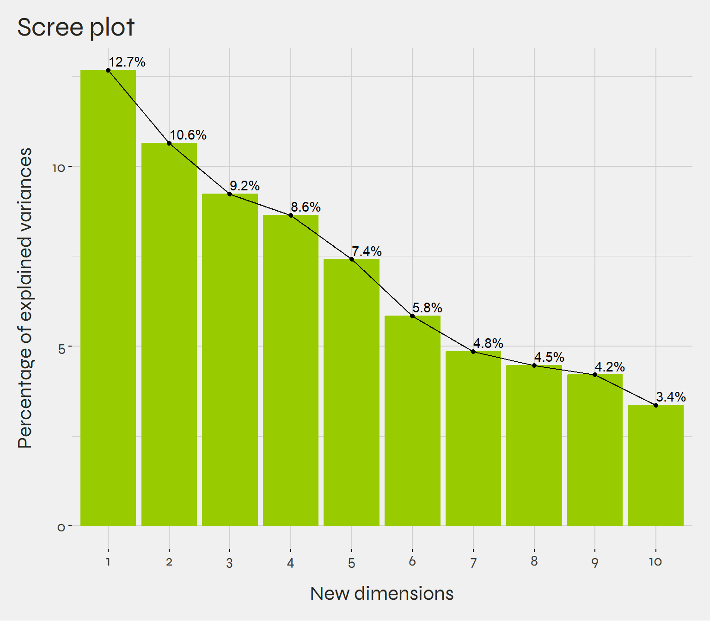
# Extract the results for the variables
var <- get_pca_var(pca_data)
# Coordinates for the variables
head(var$coor[order(var$cor[, 1], decreasing = TRUE),], 5) Dim.1 Dim.2 Dim.3 Dim.4 Dim.5
PaO2:FiO2 ratio 0.6855022 0.32090086 0.216759727 -0.32039970 0.1023068
SaO2 0.5711029 0.08763598 0.393353158 -0.09701936 0.0301817
PaO2 0.4279843 0.34444595 0.213622218 0.09625087 0.1193798
HCO3 0.1741729 -0.44817714 0.004786374 0.53999753 0.3864029
pH 0.1137703 -0.50683344 -0.237808095 0.36157295 0.3109939
Dim.6 Dim.7 Dim.8 Dim.9 Dim.10
PaO2:FiO2 ratio 0.20847820 0.14174637 -0.06306259 0.07090882 -0.14721099
SaO2 0.19143357 0.06597536 -0.10288177 0.17903682 0.20975131
PaO2 0.05355753 -0.01970108 -0.30185185 -0.18875686 -0.27658885
HCO3 -0.05815315 0.30303664 0.10652775 0.16292635 -0.03958544
pH 0.05144776 -0.22873170 -0.05549427 0.13881591 -0.09705682
Dim.11 Dim.12 Dim.13 Dim.14 Dim.15
PaO2:FiO2 ratio -0.100988692 -0.078205119 0.1035309 0.01102387 -0.16251869
SaO2 -0.034504223 -0.125077166 -0.1387474 -0.15843284 -0.07256183
PaO2 -0.035408612 -0.439356015 -0.1991378 -0.13177096 0.16345044
HCO3 0.001110447 -0.068523845 -0.0296431 -0.01000451 -0.16771070
pH -0.121225649 0.004447826 0.2099336 0.12766476 -0.13311065
Dim.16 Dim.17 Dim.18 Dim.19 Dim.20
PaO2:FiO2 ratio -0.21443001 0.04060123 0.12758012 0.01814443 -0.07275732
SaO2 0.14782468 -0.34403413 -0.27194310 0.11817904 0.10051023
PaO2 -0.16902872 -0.09081908 0.26539576 -0.06070813 0.09131245
HCO3 -0.11239092 -0.11928301 0.02146599 -0.03922374 0.06711049
pH 0.03172923 -0.28637026 0.04913603 -0.34774662 -0.16187190
Dim.21 Dim.22 Dim.23 Dim.24 Dim.25
PaO2:FiO2 ratio 0.004313382 -0.02020694 -0.009484264 0.033134774 0.01145041
SaO2 0.136917417 -0.21833241 0.038161188 -0.009906219 -0.02136466
PaO2 -0.082499469 0.03277730 -0.021281606 -0.062060344 -0.04985647
HCO3 -0.160731203 0.02784719 0.108296077 0.215448786 0.20094265
pH 0.057758258 -0.01853055 0.014746403 -0.130695881 -0.11358990
Dim.26 Dim.27 Dim.28 Dim.29
PaO2:FiO2 ratio -0.21892292 0.0013672691 -0.0005495536 1.024833e-31
SaO2 0.01892497 -0.0022148734 0.0015991668 3.421797e-32
PaO2 0.10274252 -0.0026344541 0.0009657286 -2.959158e-32
HCO3 0.02973853 0.0039980627 -0.0005111909 1.024022e-33
pH -0.01384200 -0.0006477635 -0.0004949585 -1.446844e-32# Correlations between variables and dimensions
head(var$cor[order(var$cor[, 1], decreasing = TRUE),], 5) Dim.1 Dim.2 Dim.3 Dim.4 Dim.5
PaO2:FiO2 ratio 0.6855022 0.32090086 0.216759727 -0.32039970 0.1023068
SaO2 0.5711029 0.08763598 0.393353158 -0.09701936 0.0301817
PaO2 0.4279843 0.34444595 0.213622218 0.09625087 0.1193798
HCO3 0.1741729 -0.44817714 0.004786374 0.53999753 0.3864029
pH 0.1137703 -0.50683344 -0.237808095 0.36157295 0.3109939
Dim.6 Dim.7 Dim.8 Dim.9 Dim.10
PaO2:FiO2 ratio 0.20847820 0.14174637 -0.06306259 0.07090882 -0.14721099
SaO2 0.19143357 0.06597536 -0.10288177 0.17903682 0.20975131
PaO2 0.05355753 -0.01970108 -0.30185185 -0.18875686 -0.27658885
HCO3 -0.05815315 0.30303664 0.10652775 0.16292635 -0.03958544
pH 0.05144776 -0.22873170 -0.05549427 0.13881591 -0.09705682
Dim.11 Dim.12 Dim.13 Dim.14 Dim.15
PaO2:FiO2 ratio -0.100988692 -0.078205119 0.1035309 0.01102387 -0.16251869
SaO2 -0.034504223 -0.125077166 -0.1387474 -0.15843284 -0.07256183
PaO2 -0.035408612 -0.439356015 -0.1991378 -0.13177096 0.16345044
HCO3 0.001110447 -0.068523845 -0.0296431 -0.01000451 -0.16771070
pH -0.121225649 0.004447826 0.2099336 0.12766476 -0.13311065
Dim.16 Dim.17 Dim.18 Dim.19 Dim.20
PaO2:FiO2 ratio -0.21443001 0.04060123 0.12758012 0.01814443 -0.07275732
SaO2 0.14782468 -0.34403413 -0.27194310 0.11817904 0.10051023
PaO2 -0.16902872 -0.09081908 0.26539576 -0.06070813 0.09131245
HCO3 -0.11239092 -0.11928301 0.02146599 -0.03922374 0.06711049
pH 0.03172923 -0.28637026 0.04913603 -0.34774662 -0.16187190
Dim.21 Dim.22 Dim.23 Dim.24 Dim.25
PaO2:FiO2 ratio 0.004313382 -0.02020694 -0.009484264 0.033134774 0.01145041
SaO2 0.136917417 -0.21833241 0.038161188 -0.009906219 -0.02136466
PaO2 -0.082499469 0.03277730 -0.021281606 -0.062060344 -0.04985647
HCO3 -0.160731203 0.02784719 0.108296077 0.215448786 0.20094265
pH 0.057758258 -0.01853055 0.014746403 -0.130695881 -0.11358990
Dim.26 Dim.27 Dim.28 Dim.29
PaO2:FiO2 ratio -0.21892292 0.0013672691 -0.0005495536 1.024833e-31
SaO2 0.01892497 -0.0022148734 0.0015991668 3.421797e-32
PaO2 0.10274252 -0.0026344541 0.0009657286 -2.959158e-32
HCO3 0.02973853 0.0039980627 -0.0005111909 1.024022e-33
pH -0.01384200 -0.0006477635 -0.0004949585 -1.446844e-32# Quality of representation (Cos2) for the variables on the dimensions
head(var$cos2[order(var$cor[, 1], decreasing = TRUE),], 5) Dim.1 Dim.2 Dim.3 Dim.4 Dim.5
PaO2:FiO2 ratio 0.46991321 0.102977365 4.698478e-02 0.102655967 0.0104666834
SaO2 0.32615851 0.007680065 1.547267e-01 0.009412756 0.0009109349
PaO2 0.18317056 0.118643013 4.563445e-02 0.009264230 0.0142515296
HCO3 0.03033621 0.200862745 2.290937e-05 0.291597332 0.1493071735
pH 0.01294368 0.256880140 5.655269e-02 0.130735001 0.0967171914
Dim.6 Dim.7 Dim.8 Dim.9 Dim.10
PaO2:FiO2 ratio 0.043463158 0.0200920320 0.003976891 0.00502806 0.021671074
SaO2 0.036646813 0.0043527479 0.010584659 0.03205418 0.043995613
PaO2 0.002868409 0.0003881326 0.091114539 0.03562915 0.076501392
HCO3 0.003381789 0.0918312032 0.011348161 0.02654499 0.001567007
pH 0.002646872 0.0523181910 0.003079615 0.01926986 0.009420026
Dim.11 Dim.12 Dim.13 Dim.14 Dim.15
PaO2:FiO2 ratio 1.019872e-02 6.116041e-03 0.0107186371 0.0001215258 0.02641232
SaO2 1.190541e-03 1.564430e-02 0.0192508326 0.0251009640 0.00526522
PaO2 1.253770e-03 1.930337e-01 0.0396558463 0.0173635857 0.02671605
HCO3 1.233093e-06 4.695517e-03 0.0008787132 0.0001000903 0.02812688
pH 1.469566e-02 1.978315e-05 0.0440721195 0.0162982921 0.01771844
Dim.16 Dim.17 Dim.18 Dim.19 Dim.20
PaO2:FiO2 ratio 0.045980229 0.001648460 0.0162766873 0.0003292202 0.005293628
SaO2 0.021852137 0.118359482 0.0739530513 0.0139662853 0.010102306
PaO2 0.028570709 0.008248106 0.0704349087 0.0036854767 0.008337963
HCO3 0.012631718 0.014228436 0.0004607887 0.0015385021 0.004503818
pH 0.001006744 0.082007928 0.0024143494 0.1209277097 0.026202512
Dim.21 Dim.22 Dim.23 Dim.24
PaO2:FiO2 ratio 1.860526e-05 0.0004083204 8.995127e-05 1.097913e-03
SaO2 1.874638e-02 0.0476690404 1.456276e-03 9.813317e-05
PaO2 6.806162e-03 0.0010743514 4.529068e-04 3.851486e-03
HCO3 2.583452e-02 0.0007754658 1.172804e-02 4.641818e-02
pH 3.336016e-03 0.0003433814 2.174564e-04 1.708141e-02
Dim.25 Dim.26 Dim.27 Dim.28
PaO2:FiO2 ratio 0.0001311118 0.0479272430 1.869425e-06 3.020092e-07
SaO2 0.0004564488 0.0003581546 4.905664e-06 2.557334e-06
PaO2 0.0024856681 0.0105560257 6.940348e-06 9.326318e-07
HCO3 0.0403779473 0.0008843800 1.598451e-05 2.613161e-07
pH 0.0129026643 0.0001916010 4.195976e-07 2.449839e-07
Dim.29
PaO2:FiO2 ratio 1.050282e-62
SaO2 1.170869e-63
PaO2 8.756618e-64
HCO3 1.048621e-66
pH 2.093358e-64# Correlation matrix - Cos2 for the variables
my_ggcorrplor(var$cos2)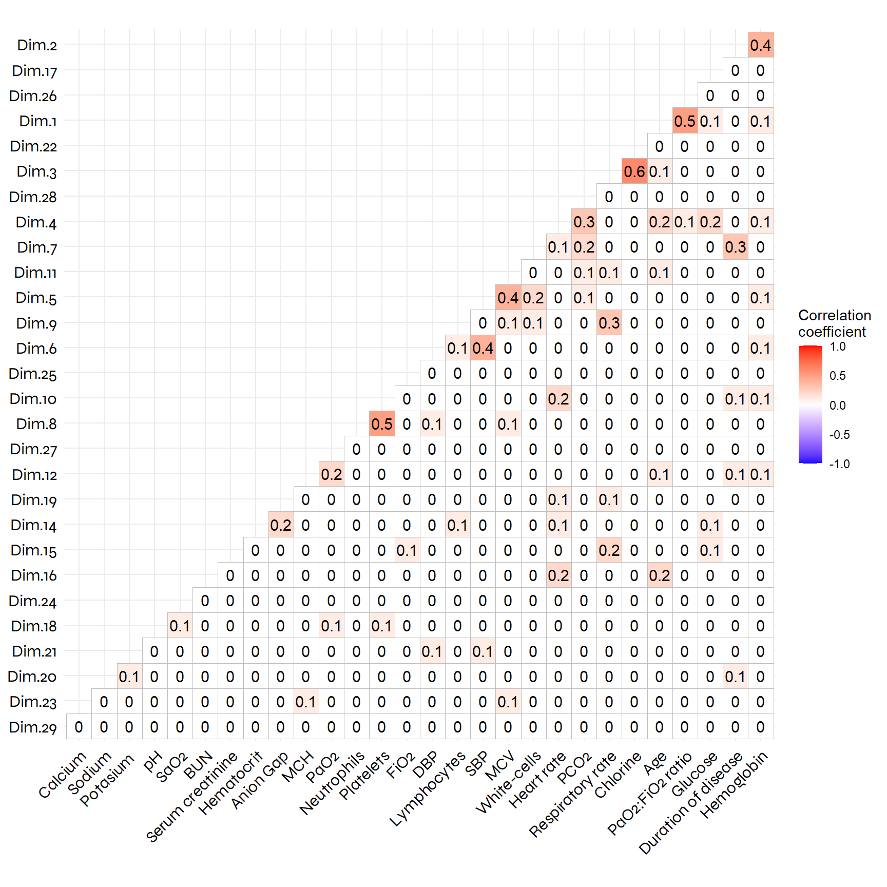
# Cos2 plot of the top 10 variables in the dimension 1
x1 <- fviz_cos2(
pca_data,
choice = "var",
axes = 1,
top = 10,
ggtheme = theme_540()
)
# Cos2 plot of the top 10 variables in the dimension 2
x2 <- fviz_cos2(
pca_data,
choice = "var",
axes = 2,
top = 10,
ggtheme = theme_540()
)
# Cos2 plot of the top 10 variables in the dimension 3
x3 <- fviz_cos2(
pca_data,
choice = "var",
axes = 3,
top = 10,
ggtheme = theme_540()
)
# Cos2 plot of the top 10 variables in the dimension 4
x4 <- fviz_cos2(
pca_data,
choice = "var",
axes = 4,
top = 10,
ggtheme = theme_540()
)
# Arrange multiple plots
ggpubr::ggarrange(x1, x2, x3, x4, ncol = 2, nrow = 2)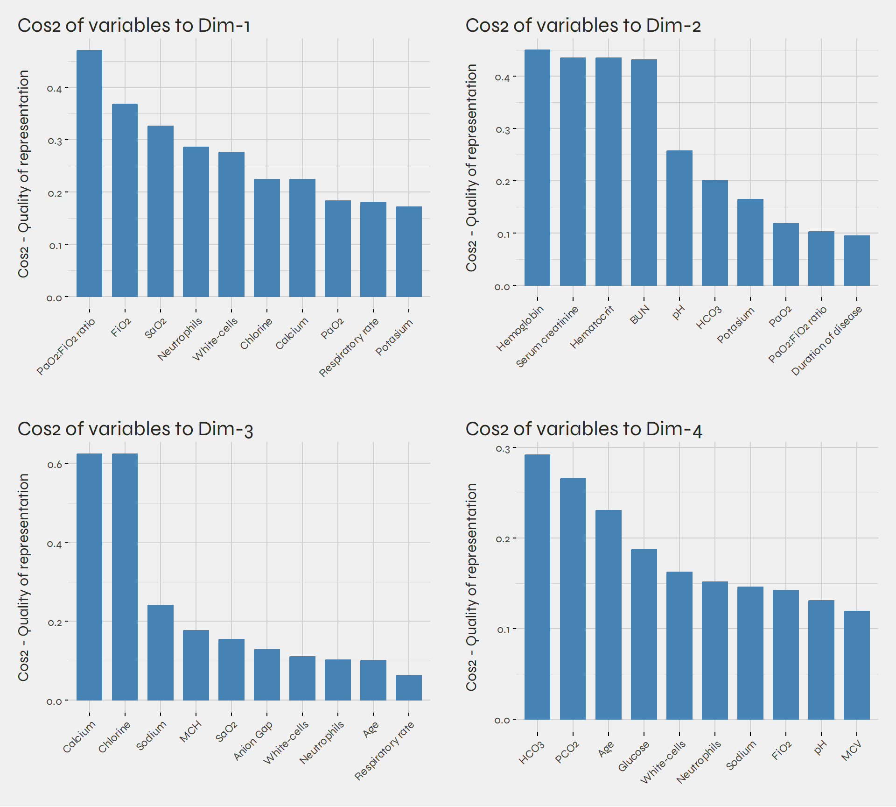
# Arrange multiple plots
cos2_plot <- ggpubr::ggarrange(
x1, x2, x3, x4, ncol = 2, nrow = 2)
annotate_figure(
cos2_plot,
top = text_grob(
"Cos2 of the top 10 variables",
face = "bold",
family = "Lato",
size = 16)
) +
theme(plot.background = element_rect(fill = "#f0f0f0", color = NA))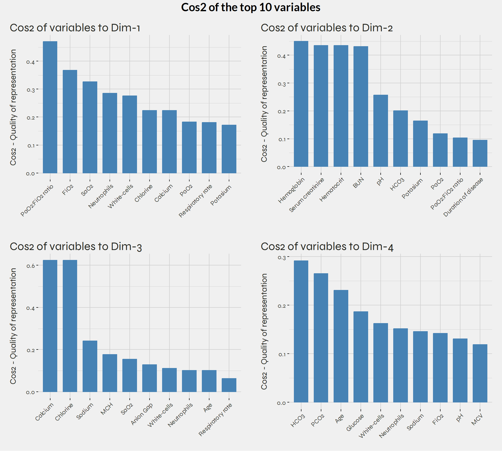
# Plot of the 10 variables with the highest cos2 in PC1 and PC2
a <- fviz_cos2(
pca_data,
choice = "var",
axes = 1:2,
top = 10,
ggtheme = theme_540()
)
# Plot of the 10 variables with the highest cos2 in PC3 and PC4
b <- fviz_cos2(
pca_data,
choice = "var",
axes = 3:4,
top = 10,
ggtheme = theme_540()
)
# Correlations circle and color by cos2 values
c <- fviz_pca_var(
pca_data,
col.var = "cos2",
gradient.cols = c("#fee0d2", "#fc9272", "#de2d26"),
repel = TRUE,
# repel = TRUE avoid text overlapping
ggtheme = theme_540()
) # Contributions of the variables on the dimensions
head(var$contrib[order(var$cor[, 1], decreasing = TRUE),], 5) Dim.1 Dim.2 Dim.3 Dim.4 Dim.5
PaO2:FiO2 ratio 12.7968700 3.3392226 1.755418641 4.0991989 0.48712219
SaO2 8.8820829 0.2490397 5.780811335 0.3758648 0.04239515
PaO2 4.9881762 3.8472088 1.704968479 0.3699339 0.66326992
HCO3 0.8261283 6.5133285 0.000855927 11.6438966 6.94879494
pH 0.3524876 8.3297913 2.112889493 5.2204347 4.50124340
Dim.6 Dim.7 Dim.8 Dim.9 Dim.10 Dim.11
PaO2:FiO2 ratio 2.5686107 1.43046628 0.3075808 0.4128504 2.2272106 1.0699231664
SaO2 2.1657744 0.30989693 0.8186389 2.6319459 4.5215799 0.1248968834
PaO2 0.1695189 0.02763337 7.0469828 2.9254839 7.8623103 0.1315300261
HCO3 0.1998589 6.53798679 0.8776897 2.1795903 0.1610467 0.0001293609
pH 0.1564263 3.72483023 0.2381836 1.5822340 0.9681283 1.5416867373
Dim.12 Dim.13 Dim.14 Dim.15 Dim.16
PaO2:FiO2 ratio 0.652011721 1.2430738 0.01516192 3.8326454 7.3981150
SaO2 1.667789017 2.2325792 3.13167050 0.7640267 3.5159596
PaO2 20.578712277 4.5990124 2.16633230 3.8767180 4.5969626
HCO3 0.500574237 0.1019071 0.01248756 4.0814413 2.0324150
pH 0.002109019 5.1111814 2.03342312 2.5710921 0.1619828
Dim.17 Dim.18 Dim.19 Dim.20 Dim.21
PaO2:FiO2 ratio 0.2900614 3.18473207 0.06866065 1.213789 0.004904327
SaO2 20.8264187 14.46981501 2.91274372 2.316383 4.941525048
PaO2 1.4513286 13.78144758 0.76862594 1.911833 1.794096962
HCO3 2.5036217 0.09015892 0.32086287 1.032692 6.809951195
pH 14.4300348 0.47239686 25.22012263 6.008040 0.879370262
Dim.22 Dim.23 Dim.24 Dim.25 Dim.26
PaO2:FiO2 ratio 0.1372668 0.03595615 0.48205654 0.0657560 50.8660568
SaO2 16.0251025 0.58211606 0.04308695 0.2289209 0.3801160
PaO2 0.3611693 0.18104004 1.69105724 1.2466272 11.2033025
HCO3 0.2606916 4.68803950 20.38065097 20.2505910 0.9386086
pH 0.1154360 0.08692366 7.49987030 6.4710218 0.2033496
Dim.27 Dim.28 Dim.29
PaO2:FiO2 ratio 0.012072684 0.003205040 1.024979e-29
SaO2 0.031680622 0.027139439 1.142661e-30
PaO2 0.044820544 0.009897456 8.545653e-31
HCO3 0.103227420 0.002773190 1.023358e-33
pH 0.002709748 0.002599866 2.042925e-31# Correlation matrix - contributions of the variables
corrplot(var$contrib, is.corr = FALSE)
# Contribution plot of the top 10 variables in the dimension 1
y1 <- fviz_contrib(
pca_data,
choice = "var",
axes = 1,
top = 10,
ggtheme = theme_540()
)
# Contribution plot of the top 10 variables in the dimension 2
y2 <- fviz_contrib(
pca_data,
choice = "var",
axes = 2,
top = 10,
ggtheme = theme_540()
)
# Contribution plot of the top 10 variables in the dimension 3
y3 <- fviz_contrib(
pca_data,
choice = "var",
axes = 2,
top = 10,
ggtheme = theme_540()
)
# Contribution plot of the top 10 variables in the dimension 4
y4 <- fviz_contrib(
pca_data,
choice = "var",
axes = 2,
top = 10,
ggtheme = theme_540()
)
# Arrange multiple plots
contrib_plot <- ggpubr::ggarrange(
y1, y2, y3, y4, ncol = 2, nrow = 2)
annotate_figure(
contrib_plot,
top = text_grob(
"Contribution of the top 10 variables",
face = "bold",
family = "Lato",
size = 16)
) +
theme(plot.background = element_rect(fill = "#f0f0f0", color = NA))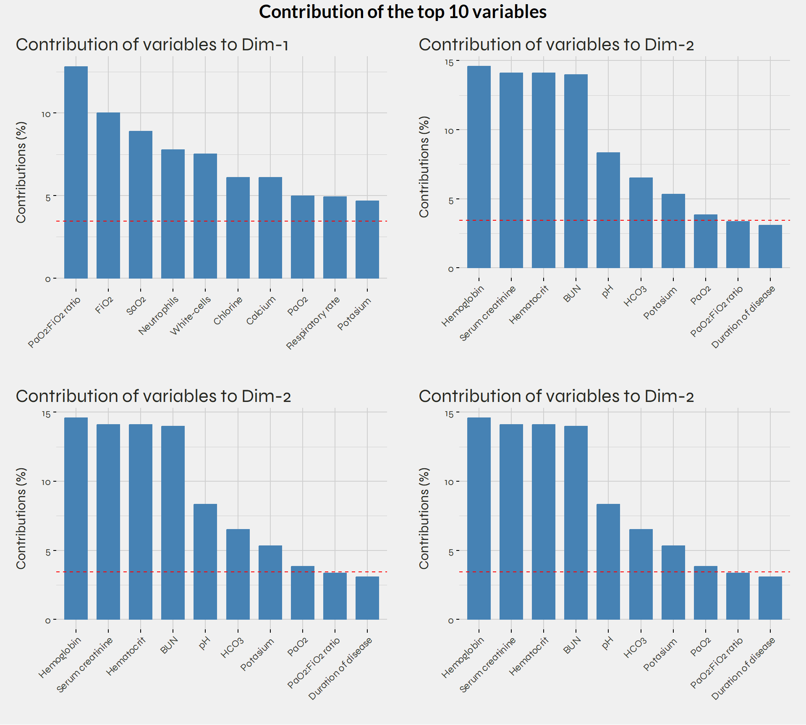
# Plot of 10 variables with the highest contribution on PC1 and PC2
d <- fviz_contrib(
pca_data,
choice = "var",
axes = 1:2,
top = 10,
ggtheme = theme_540()
)
# Plot of 10 variables with the highest contribution on PC3 and PC4
e <- fviz_contrib(
pca_data,
choice = "var",
axes = 3:4,
top = 10,
ggtheme = theme_540()
)
# Correlations circle and color by contributions values
f <- fviz_pca_var(
pca_data,
col.var = "contrib",
gradient.cols = c("#fee0d2", "#fc9272", "#de2d26"),
repel = TRUE,
ggtheme = theme_540())# Arrange multiple plots
pca_var <- ggpubr::ggarrange(
a, d, b, e, c, f, ncol = 2, nrow = 3,
labels = c("A)", "B)", "C)", "D)", "E)", "F)"),
legend = "right")
annotate_figure(
pca_var ,
top = text_grob(
"PCA variables",
face = "bold",
family = "Lato",
size = 16)
) +
theme(plot.background = element_rect(fill = "#f0f0f0", color = NA))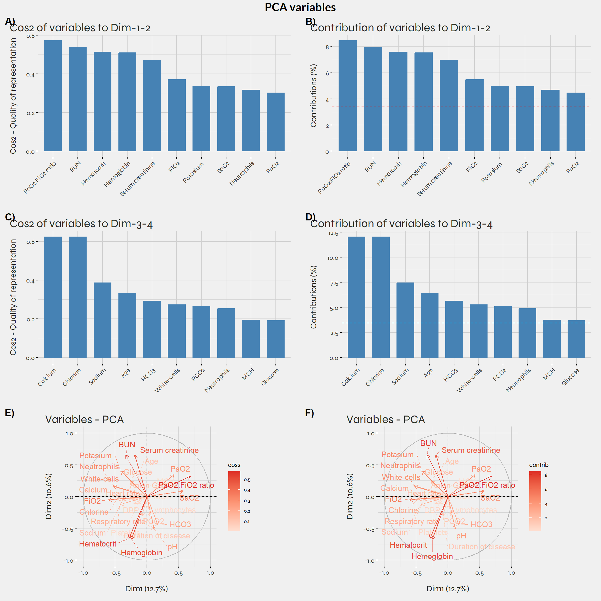
# Extract results for the individuals
ind <- get_pca_ind(pca_data)
# Coordinates for the individuals
head(ind$coord[order(var$cor[, 1], decreasing = TRUE),], 5) Dim.1 Dim.2 Dim.3 Dim.4 Dim.5 Dim.6
36 -2.5032593 -0.1712226 -0.21995473 1.49127971 0.295882837 1.4648730
34 0.6567530 1.8888836 5.10487325 -0.32457657 0.177493988 -0.3933192
38 1.9622452 -0.4507486 0.02314891 -0.03782896 -0.921062806 1.0221870
40 -0.5356331 -1.7593722 -1.32841376 -1.81987948 -1.002419752 0.5294249
24 -0.7165845 -1.7152155 -1.09170044 -0.08915669 0.008418043 -0.4361720
Dim.7 Dim.8 Dim.9 Dim.10 Dim.11 Dim.12 Dim.13
36 -1.7419422 0.9042951 0.45861588 -0.48567791 -0.6188425 -0.7214266 0.2971383
34 1.8921931 0.2285832 0.58102049 -1.24967430 -1.8450896 -0.1668237 0.6692687
38 0.2016643 0.6938786 0.15143736 0.26970641 -0.8706425 0.1770025 0.6910169
40 -0.2697920 0.7440491 0.25858570 -1.30472155 0.6267092 -0.7423747 0.5403266
24 -0.5829246 1.3546320 0.09820665 0.03859044 0.6908867 -0.6701233 -1.2495642
Dim.14 Dim.15 Dim.16 Dim.17 Dim.18 Dim.19
36 -0.5611086 0.5881599 0.1074079 0.1413824 -0.08874932 1.71718318
34 0.6684023 -0.7740466 -0.6046671 -0.3340341 1.37078840 0.63525461
38 -0.1645056 0.1836828 -0.4717905 -0.2394299 0.15799159 0.32852253
40 -0.4688036 -0.5078042 -0.6021172 -0.1218352 -0.03226181 -0.01408616
24 -0.7636850 0.7190779 -0.1204815 -1.1089047 -0.28971044 -0.62663311
Dim.20 Dim.21 Dim.22 Dim.23 Dim.24 Dim.25
36 0.51771336 1.90050485 -0.33549433 0.3273428 0.4672018 -0.3330958
34 1.00434603 -0.85815708 -0.60233468 1.5223736 2.6128094 2.3521437
38 -0.67246336 -0.02328265 0.58516367 -0.3158926 -0.2017205 0.2022985
40 -0.51673694 -0.47452516 -0.08846433 0.4786940 -0.3684738 0.1202648
24 0.01473289 0.26848671 -0.45832149 0.1682022 0.3692972 0.4290834
Dim.26 Dim.27 Dim.28 Dim.29
36 -0.06669583 -0.11429866 -0.034115066 -3.719864e-16
34 0.01186492 0.12149200 -0.080305560 5.881231e-16
38 -0.34863187 0.04774863 0.013679544 -8.412969e-17
40 0.09154696 -0.02863602 -0.044152983 2.908111e-16
24 -0.23767108 -0.04530015 0.003403587 1.682228e-16# Cos2 of the individuals on dimensions
head(ind$cos2[order(var$cor[, 1], decreasing = TRUE),], 5) Dim.1 Dim.2 Dim.3 Dim.4 Dim.5 Dim.6
36 0.259068767 0.001212064 2.000184e-03 0.091943622 3.619453e-03 0.08871628
34 0.007144149 0.059095822 4.316347e-01 0.001744941 5.218115e-04 0.00256234
38 0.409286028 0.021596784 5.696152e-05 0.000152114 9.017763e-02 0.11106599
40 0.018972176 0.204690521 1.166941e-01 0.219011820 6.644794e-02 0.01853493
24 0.039408335 0.225782735 9.146613e-02 0.000610044 5.438456e-06 0.01460054
Dim.7 Dim.8 Dim.9 Dim.10 Dim.11 Dim.12
36 0.125450059 0.0338083313 0.0086956403 0.0097521435 0.01583302 0.0215172945
34 0.059303086 0.0008654362 0.0055915123 0.0258666427 0.05638730 0.0004609587
38 0.004322930 0.0511784699 0.0024377345 0.0077321964 0.08057495 0.0033302676
40 0.004813273 0.0366088045 0.0044217206 0.1125687823 0.02597254 0.0364442132
24 0.026078230 0.1408302684 0.0007401763 0.0001142912 0.03663253 0.0344637727
Dim.13 Dim.14 Dim.15 Dim.16 Dim.17 Dim.18
36 0.003650233 0.013016590 0.014301915 0.0004769537 0.0008264071 3.256368e-04
34 0.007419034 0.007399838 0.009923859 0.0060559059 0.0018481106 3.112341e-02
38 0.050757202 0.002876614 0.003586387 0.0236602202 0.0060936430 2.653312e-03
40 0.019306118 0.014533295 0.017051984 0.0239742098 0.0009815846 6.882713e-05
24 0.119831356 0.044759153 0.039683061 0.0011140225 0.0943716921 6.441420e-03
Dim.19 Dim.20 Dim.21 Dim.22 Dim.23 Dim.24
36 1.219092e-01 1.108108e-02 1.493280e-01 0.0046534360 0.004430054 0.009024276
34 6.684086e-03 1.670756e-02 1.219776e-02 0.0060092757 0.038387413 0.113073763
38 1.147230e-02 4.806817e-02 5.762157e-05 0.0363977940 0.010607164 0.004325344
40 1.312101e-05 1.765718e-02 1.489021e-02 0.0005175099 0.015152988 0.008978328
24 3.013561e-02 1.665824e-05 5.532213e-03 0.0161210663 0.002171284 0.010466596
Dim.25 Dim.26 Dim.27 Dim.28 Dim.29
36 0.004587138 1.839081e-04 5.401142e-04 4.811670e-05 5.720810e-33
34 0.091637684 2.331718e-06 2.444791e-04 1.068163e-04 5.729053e-33
38 0.004350163 1.291976e-02 2.423496e-04 1.989132e-05 7.523483e-34
40 0.000956443 5.542046e-04 5.422601e-05 1.289147e-04 5.592476e-33
24 0.014129825 4.335169e-03 1.574899e-04 8.890515e-07 2.171816e-33# Plot of 20 patients with the highest cos2 in PC1 and PC2
a <- fviz_cos2(
pca_data,
choice = "ind",
axes = 1:2,
top = 20,
ggtheme = theme_540()
)
# Plot of 20 patients with the highest cos2 in PC3 and PC4
b <- fviz_cos2(
pca_data,
choice = "ind",
axes = 3:4,
top = 20,
ggtheme = theme_540()
)
# Correlations circle and color by cos2 values
c <- fviz_pca_ind(
pca_data,
col.ind = "cos2",
gradient.cols = c("#fee0d2", "#fc9272", "#de2d26"),
repel = TRUE,
ggtheme = theme_540()
)# Contributions of the individuals on the dimensions
head(ind$contrib[order(var$cor[, 1], decreasing = TRUE),], 5) Dim.1 Dim.2 Dim.3 Dim.4 Dim.5 Dim.6
36 0.89814028 0.005003479 0.0095134166 0.467389998 2.144444e-02 0.66745708
34 0.06182108 0.608920196 5.1243624445 0.022140913 7.716894e-03 0.04811868
38 0.55187291 0.034675179 0.0001053734 0.000300753 2.078039e-01 0.32500058
40 0.04112135 0.528281524 0.3470057289 0.696059638 2.461356e-01 0.08718306
24 0.07359821 0.502096734 0.2343564336 0.001670587 1.735791e-05 0.05917511
Dim.7 Dim.8 Dim.9 Dim.10 Dim.11 Dim.12
36 1.13701879 0.33287584 0.090894334 0.1275921439 0.2114530 0.29202210
34 1.34162478 0.02126917 0.145888659 0.8447358299 1.8796995 0.01561518
38 0.01523905 0.19598773 0.009910708 0.0393468317 0.4185364 0.01757884
40 0.02727460 0.22535395 0.028896659 0.9207949118 0.2168631 0.30922722
24 0.12732830 0.74697250 0.004167931 0.0008055394 0.2635525 0.25196542
Dim.13 Dim.14 Dim.15 Dim.16 Dim.17 Dim.18
36 0.05389158 0.20674066 0.26419781 0.009769429 0.01851180 0.008111166
34 0.27340393 0.29336473 0.45758589 0.309620052 0.10333311 1.935058611
38 0.29146142 0.01777024 0.02576767 0.188492807 0.05309023 0.025705213
40 0.17820357 0.14431579 0.19693869 0.307014121 0.01374686 0.001071842
24 0.95306147 0.38296634 0.39490285 0.012292409 1.13879712 0.086433396
Dim.19 Dim.20 Dim.21 Dim.22 Dim.23 Dim.24
36 3.2366893241 0.3234558806 5.0110411445 0.19915039 0.22543318 0.50441193
34 0.4429588821 1.2173151596 1.0217004438 0.64192834 4.87589869 15.77581506
38 0.1184671862 0.5457246181 0.0007520639 0.60585057 0.20993805 0.09403221
40 0.0002177974 0.3222369321 0.3123981777 0.01384673 0.48209008 0.31375419
24 0.4310170474 0.0002619462 0.1000081987 0.37166464 0.05952171 0.31515811
Dim.25 Dim.26 Dim.27 Dim.28 Dim.29
36 0.29287230 0.0248478830 0.44404247 0.0650058119 0.71073771
34 14.60385734 0.0007863604 0.50169250 0.3602060322 1.77660850
38 0.10802520 0.6789318879 0.07749330 0.0104520862 0.03635414
40 0.03817831 0.0468144445 0.02787197 0.1088879568 0.43438726
24 0.48598552 0.3155329373 0.06974957 0.0006470433 0.14535332# Plot of the 20 individuals with the highest contribution in PC1 and PC2
d <- fviz_contrib(
pca_data,
choice = "ind",
axes = 1:2,
top = 20,
ggtheme = theme_540()
)
# Plot of the 20 individuals with the highest contribution in PC3 and PC4
e <- fviz_contrib(
pca_data,
choice = "ind",
axes = 3:4,
top = 20,
ggtheme = theme_540()
)
# Correlations circle and color by contributions values
f <- fviz_pca_ind(
pca_data,
col.ind = "contrib",
gradient.cols = c("#fee0d2", "#fc9272", "#de2d26"),
ggtheme = theme_540()
)# Arrange multiple plots
pca_ind <- ggpubr::ggarrange(
a, d, b, e, c, f, ncol = 2, nrow = 3,
legend = "right")
annotate_figure(
pca_ind,
top = text_grob(
"PCA individuals",
face = "bold",
family = "Lato",
size = 16)
) +
theme(plot.background = element_rect(fill = "#f0f0f0", color = NA))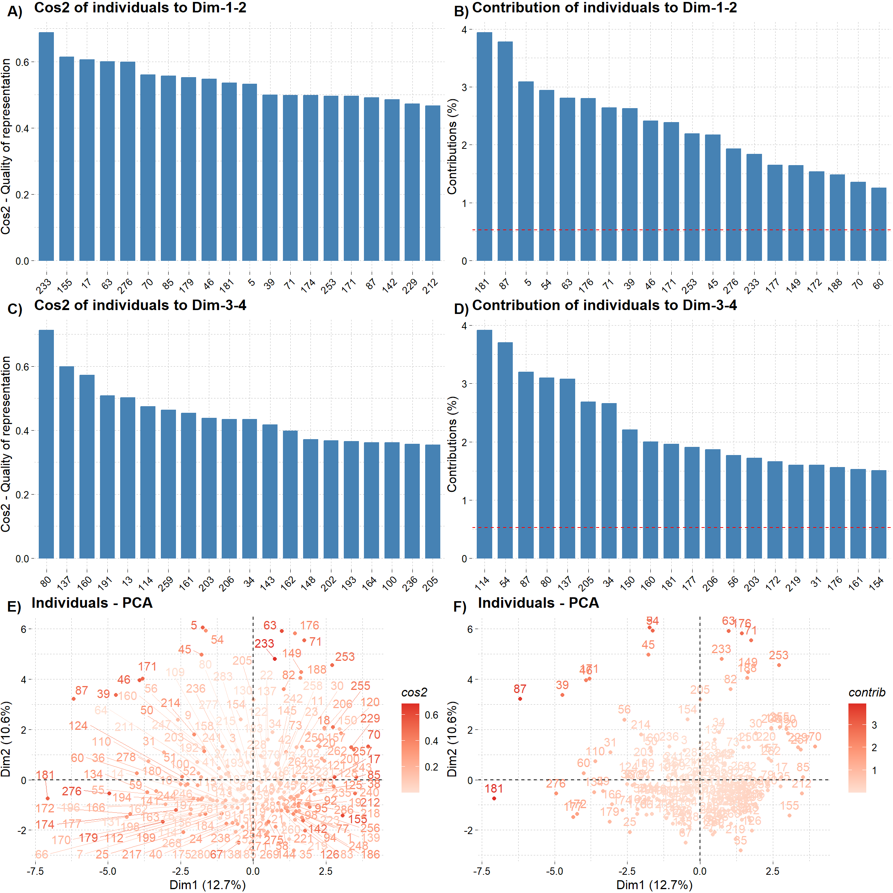
# Plot of individuals and color by outcome on PC1 and PC2
ind.graph <- fviz_pca_ind(
pca_data,
axes = 1:2,
geom.ind = "point",
col.ind = numerical$a_f,
palette = "igv",
addEllipses = TRUE,
mean.point = FALSE,
ggtheme = theme_pubr()
)
a <- ggpubr::ggpar(
ind.graph,
title = element_blank(),
xlab = "PC1 (12.7%)",
ylab = "PC2 (10.6%)",
legend.title = "Group",
legend = "right",
font.legend = c(12, "black")
)
# Plot of individuals and color by outcome on PC3 and PC4
ind.graph <- fviz_pca_ind(
pca_data,
axes = 3:4,
geom.ind = "point",
col.ind = numerical$a_f,
palette = "igv",
addEllipses = TRUE,
mean.point = FALSE,
ggtheme = theme_pubr()
)
b <- ggpubr::ggpar(
ind.graph,
title = element_blank(),
xlab = "PC3 (9.2%)",
ylab = "PC2 (8.6%)",
legend.title = "Group",
legend = "right",
font.legend = c(12, "black")
)# Arrange multiple plots
ggpubr::ggarrange(
a, b, ncol = 2, nrow = 1,
labels = c("A)", "B)"),
legend = "bottom", common.legend = TRUE
)
# Contributions on PC1 and PC2
a <- fviz_pca_biplot(
pca_data,
# Dimensions 1 and 2
axes = 1:2,
# Individuals
col.ind = numerical$a_f,
geom.ind = "point",
col.var = "black",
# Top 10 contributing variables
geom.var = "text",
select.var = list(contrib = 10),
# Theme
palette = "Set1",
addEllipses = TRUE,
mean.point = FALSE,
repel = TRUE,
ggtheme = theme_pubr()
)
# Plot parameters
a1 <- ggpubr::ggpar(
a,
title = element_blank(),
xlab = "PC1 (12.7%)",
ylab = "PC2 (10.6%)",
legend.title = "Group",
font.legend = c(12, "black")
)
# Contributions on PC3 and PC4
b <- fviz_pca_biplot(
pca_data,
# Dimensions 3 and 4
axes = 3:4,
# Individuals
col.ind = numerical$a_f,
geom.ind = "point",
col.var = "black",
# Top 10 contributing variables
geom.var = "text",
select.var = list(contrib = 10),
# Theme
palette = "Set1",
addEllipses = TRUE,
mean.point = FALSE,
repel = TRUE,
ggtheme = theme_pubr()
)
# Plot parameters
b1 <- ggpubr::ggpar(
b,
title = element_blank(),
xlab = "PC3 (9.2%)",
ylab = "PC4 (8.6%)",
legend.title = "Group",
font.legend = c(12, "black")
)
# Arrange multiple plots
F1 <-
a1 + b1 +
plot_layout(guides = "collect") +
plot_annotation(tag_levels = list(c("A)", "B)"))) &
theme(legend.position = "bottom",
plot.tag = element_text(face = 'bold'))
# View
F1 + plot_annotation(title = 'Figure 2') &
theme(plot.title = element_text(face = 'bold', size = 18))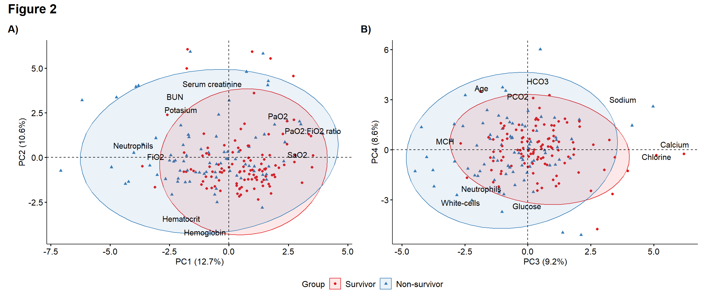
The biplots of PCA showed that PaO2:FiO2 ratio, BUN, hematocrit, hemoglobin, serum creatinine, FiO2, potassium, SaO2, neutrophils, and PaO2 were variables the highest representation and contribution for PC1 and PC2. While chlorine, calcium, sodium, age, HCO3, WBC, PCO2, and neutrophils were variables with the highest representation and contribution for PC3 and PC4. The PC1 and PC2 explained 23.3% of variance, and PC3 and PC4 explained 17.8%. For these principal components, there was no clear separation between survivors and non-survivors (Figure 2). However, based on the results of bivariate analysis and PCA, the non-survivors group showed that high values of FiO2, BUN, serum creatinine, neutrophils, and low values PaO2:FiO2 ratio contributed considerably to the PC1 and PC2 (Figure 2A). while WBC, neutrophils, age, and PCO2 contributed considerably to the PC3 and PC4 (Figure 2B).
# Contributions on PC1 and PC2
a_grey <- fviz_pca_biplot(
pca_data,
axes = 1:2,
col.ind = numerical$a_f,
geom.ind = "point",
col.var = "black",
geom.var = "text",
select.var = list(contrib = 10),
addEllipses = TRUE,
mean.point = FALSE,
repel = TRUE,
ggtheme = theme_pubr()
) +
scale_color_manual(values = c("grey14", "grey59")) +
scale_fill_manual(values = c("grey14", "grey59"))
# Plot parameters
a1_grey <- ggpubr::ggpar(
a_grey,
title = element_blank(),
xlab = "PC1 (12.7%)",
ylab = "PC2 (10.6%)",
legend.title = "Group",
font.legend = c(12, "black")
)
# Contributions on PC3 and PC4
b_grey <- fviz_pca_biplot(
pca_data,
axes = 3:4,
col.ind = numerical$a_f,
geom.ind = "point",
col.var = "black",
geom.var = "text",
select.var = list(contrib = 10),
addEllipses = TRUE,
mean.point = FALSE,
repel = TRUE,
ggtheme = theme_pubr()
) +
scale_color_manual(values = c("grey14", "grey59")) +
scale_fill_manual(values = c("grey14", "grey59"))
# Plot parameters
b1_grey <- ggpubr::ggpar(
b_grey,
title = element_blank(),
xlab = "PC3 (9.2%)",
ylab = "PC4 (8.6%)",
legend.title = "Group",
font.legend = c(12, "black")
)
# Arrange multiple plots
F1_grey <-
ggpubr::ggarrange(
a1_grey ,
b1_grey ,
ncol = 2,
nrow = 1,
labels = c("A)", "B)"),
legend = "bottom",
common.legend = TRUE
)
# View
F1_greyThe PCA has limitations, including sensitivity to the scale of variables. It’s essential to standardize variables to have unit variance before conducting PCA to mitigate this issue. PCA also assumes linearity; if variables do not exhibit linear relationships, alternative dimensionality reduction methods like t-SNE or UMAP may be more suitable for non-linear data structures. The principal components (new dimensions) created by PCA are linear combinations of the original variables (original dimensions) and may lack direct interpretability, necessitating careful evaluation. Dimension reduction through PCA inevitably leads to some information loss. While the discarded components are less significant, they may still hold valuable insights. Recognizing these limitations is crucial as it does not lessen PCA’s value but rather enhances its usefulness in guiding its application. It’s recommended to perform PCA before K-means clustering because speeds up the clustering process and optimizes computational resources, especially on large datasets. The PCA optimizes clustering by reducing noise and redundant information, which helps K-means clustering focus on relevant features, leading to more accurate cluster assignments. Dimension reduction captures important information into few dimensions, this reduces the number of features and preserves most of the variation, making subsequent clustering more efficient and improves interpretation.
tsne_numerical <- data |>
dplyr::select(where(is.numeric), -t_de_enfermedad, a_f) |>
na.omit() |>
mutate(ID = row_number())
meta_numerical <- tsne_numerical |>
dplyr::select(ID, a_f)
tSNE_fit <- tsne_numerical |>
dplyr::select(where(is.numeric)) |>
scale() |>
Rtsne()
tSNE_df <- tSNE_fit$Y |>
as.data.frame() |>
rename(tSNE1 = "V1",
tSNE2 = "V2") |>
mutate(ID = row_number())
tSNE_df <- tSNE_df |>
inner_join(meta_numerical, by = "ID")
tSNE_df |>
ggplot(aes(x = tSNE1,
y = tSNE2,
color = a_f)) +
geom_point() +
labs(color = "Group") +
scale_color_pomological() +
theme_pomological() +
theme(legend.position = "right",
axis.line = element_line(color = "black"))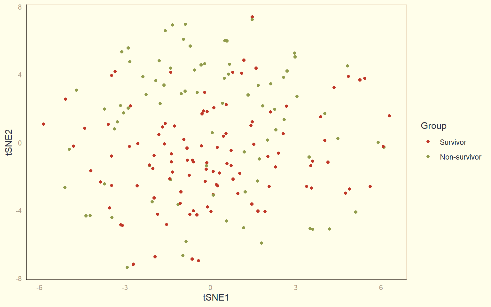
Word (.docx) and PowerPoint (*.pptx) documents can be manipulated with the officer package. For example, you can use the fp_border() function to define a border style or prop_section() to define section properties such as page size, page orientation, borders and margins.
The save_as_docx() function of the flextable package can be used in conjunction with the string package to set the output directory. This can be achieved by using the following code: path = stringr::str_glue(output_dir, "table.docx"), or by using the here() function, as demonstrated below.
# Save tables
save_as_docx(
flex_table_1,
align = "center",
path = here("outputs", "Table_1.docx"))
save_as_docx(
flex_table_2,
align = "center",
path = here("outputs", "Table_2.docx"))
save_as_docx(
flex_table_3,
align = "center",
path = here("outputs", "Table_3.docx"))The ggsave() function of the gpplot2 package can be used in conjunction with the string package to set the output directory. This can be achieved by using the following code: filename = stringr::str_glue(output_dir, "figure_1.png"), or by using the here() function, as demonstrated below. All dimensions are in inches (in).
# Save supplementary figure 1 (EPS)
ggsave(
plot = FS1,
filename = here("outputs", "FIG_S1.eps"),
width = 12,
height = 12,
units = "in")
# Save supplementary figure 1 (PNG)
ggsave(
plot = FS1,
filename = here("outputs", "FIG_S1.png"),
width = 12,
height = 12,
dpi = 300,
units = "in")
# Save supplementary figure 1 (JPEG)
ggsave(
plot = FS1,
filename = here("outputs", "FIG_S1.jpeg"),
width = 12,
height = 12,
dpi = 300,
units = "in")
# Save supplementary figure 1 grey (JPEG)
ggsave(
plot = FS1_grey,
filename = here("outputs", "FIG_S1_grey.jpeg"),
width = 12,
height = 12,
dpi = 500,
units = "in")
# Save figure 2 (EPS)
ggsave(
plot = F1,
filename = here("outputs", "FIG2.eps"),
width = 14,
height = 6,
units = "in")
# Save figure 2 (PNG)
ggsave(
plot = F1,
filename = here("outputs", "FIG2.png"),
width = 14,
height = 6,
dpi = 300,
units = "in")
# Save figure 2 (JPEG)
ggsave(
plot = F1,
filename = here("outputs", "FIG2.jpeg"),
width = 14,
height = 6,
dpi = 300,
units = "in")
# Save figure 2 grey (JPEG)
ggsave(
plot = F1_grey,
filename = here("outputs", "FIG2_grey.jpeg"),
width = 14,
height = 6,
dpi = 500,
units = "in")